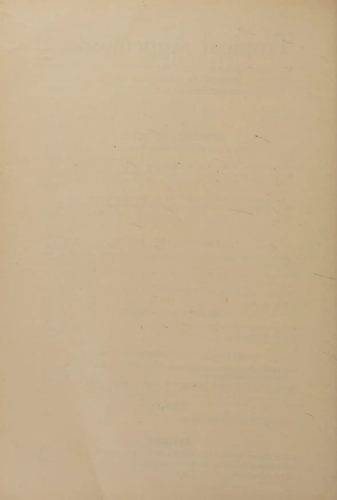
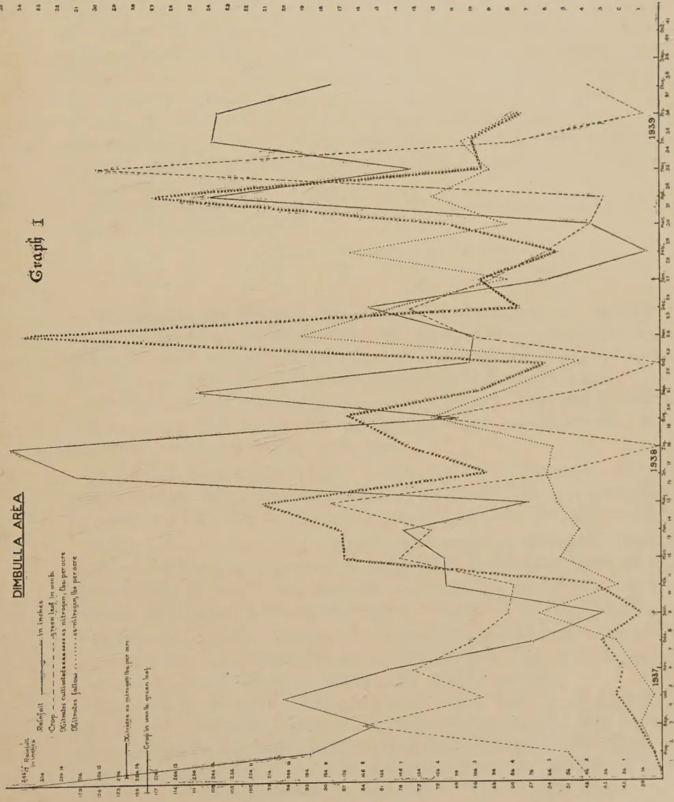
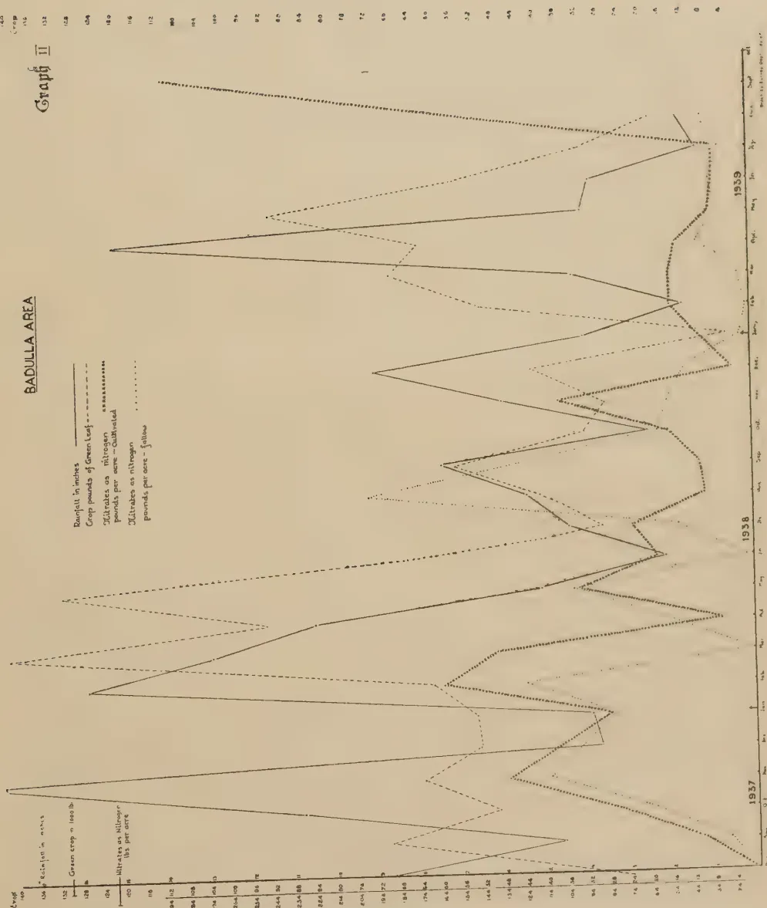
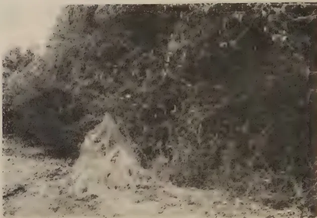
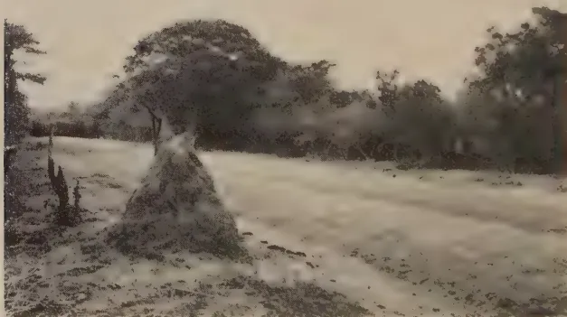
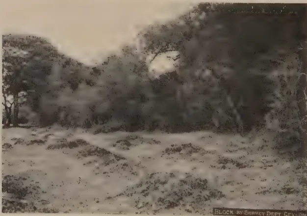

VOL. XCV
PERADENIYA, DECEMBER, 1940.
No. 6
| Page | |
|---|---|
| Editorial .. .. . | 323 |
| Periodicity of Nitrification—Pt. I. By Alexander Bruce, B.Sc., F.I.C., F.R.S.E. .. .. . | 325 |
| Studies on Ceylon Soils. XIV. A Comparison of Soils from Termite Mounds and Adjacent Land. By A. W. R. Joachim, Ph.D., B.Sc. (Lond.), F.I.C., Dip. Agric. (Cantab.), and S. Kandiah, Dip. Agric. (Poona) .. .. . | 333 |
| The Analysis of Ceylon Foodstuffs. IX. A. The Composition of some Ceylon Honeys; B. The Nutritive Value of some Palmyra Products. By A. W. R. Joachim Ph.D., BSc. (Lond.), F.I.C., Dip. Agric. (Cantab.), and S. Kandiah, Dip. Agric. (Poona). .. .. | 339 |
| Objectives in Vegetable Breeding—Answers to a Questionnaire issued by the Botanist .. .. . | 344 |
| Work in Progress in the Horticultural Division of the Department of Agriculture .. .. . | 350 |
| Personnel of the Reconstituted Central Board of Agriculture (1940–43) .. .. | 356 |
| Plant Breeding and the Production of Better Seed .. .. . | 358 |
| Lime for the Land .. .. . | 366 |
| Minutes of the Fifty-second Meeting of the Board of Management, Coconut Research Scheme .. .. . | 371 |
| Minutes of the Fifty-fourth Meeting of the Rubber Research Board .. .. | 374 |
| A Manual of Tropical Citrus Culture .. .. . | 377 |
| Animal Disease Return for the Month ended November, 1940 .. .. | 379 |
| Meteorological Report for the Month ended November, 1940 .. .. | 380 |
1—J. N. 99732 (11/40)
[Faint page: no legible print of its own could be verified; text withheld (stage 4 review list)]

This image shows a blank, aged, cream-colored page. The paper has a slightly textured appearance with some minor discoloration and faint, illegible markings scattered across the surface. A small, dark, irregular smudge is visible near the top center of the page. The overall appearance is that of an old, unused sheet of paper.DECEMBER, 1940
ONE striking difference between the traditional "chena" cultivation and rotational farming is the fact that cattle play no part in "chena" cultivation while they are an integral factor of successful rotational farming.
Increasing attention is being given to the question: is it possible to replace existing "chena" methods with a stable and remunerative system of rotational dry-land farming in the dry zone. Up to the present attention has been directed mainly towards determining a sequence of food crops, money crops, and green manure crops which will over a period of years give a reasonable assurance of a livelihood to the cultivator and furnish him with a food supply, adequate not only to enable him to exist between one crop and another but to nourish him fully so that he may be healthy, well-developed and able to rear a strong and vigorous family which can populate the empty spaces which are such a feature of the dry zone. It is becoming increasingly clear that in addition to discovering a suitable sequence of crops to follow each other on the land it is equally important to provide for adequate cultivation and preparation of the soil for the various crops and periodical replenishment of the soil by a satisfactory system of manuring.
Such conceptions are, of course, unknown to the "chena" farmer. The only cultivation which is possible on a "chena" is such as can be accomplished by the mammoty, and manuring is left to the process of nature, namely, by abandoning the land after a short period of cultivation and allowing regrowth of jungle to take place.
Dependence on the mammoty sets a very definite and very restricted limit to the area which can be cultivated. It is very apparent that, if a cultivator is to be able to secure an adequate standard of comfort and nutrition by rotational
324farming in the dry zone, he must be able to cultivate a much greater area of land than is possible by his present "chena" methods. In other words he will have to replace his mammoth by tillage implements which means that instead of regarding cattle as depredators which must be guarded against by fences and caretakers he must look upon them as his chief ally.
So far as manuring is concerned the ploughing-in of green crops may provide a partial solution of the problem but an adequate supply either of farm yard manure or compost will be a powerful supplement.
If cattle suitable to provide the motive power for tillage instruments, to furnish a supply of manure for the land, and to supply dairy products for the cultivator's family are to become a feature of the dry-zone farming of the future, a revolutionary change in the attitude of the cultivator is necessary. What will have to be accomplished will include the following :— (a) the growing, collection, and storage of fodder to maintain the cattle during the season of scarcity ; (b) a system of management whereby all or the greater part of the manure produced by the cattle can be returned to the soil ; (c) an increase in size and strength of the cattle so that they may be used to work tillage implements ; (d) a method of management which will make the cattle docile and easy to train ; and (e) improvement of the milking capacity of the cows to such a degree that the milk production of one or two cows will be sufficient to supply the needs of an average family.
Cattle, or to go rather wider, livestock generally are essential to prosperous dry-land farming and the problems connected with their successful incorporation in a system adopted to the dry-zone conditions of Ceylon merit the most careful study. A beginning is being made at the small colony at Kurundan-kulam. A three-fold outlook embracing the land, the plant, and the domestic animal must replace the old concentration on two aspects only—namely, the land and the plant.
325ALEXANDER BRUCE, B.Sc., F.I.C.
PLANTED tea does not cover all the soil so that part of the planted area is bare fallow, one of the most uneconomical forms of agriculture; the soil is thereby impoverished. There is no ploughing in tea areas and little forking so that the land is saved that wasteful, but necessary, form of cultivation. There is no rotation of crops to rejuvenate the soil, just a dead level of one crop through a procession of many years. Tea areas have a high rainfall which causes soil erosion especially on sloping land.
Agricultural practices in tea lands are not simple and recourse has to be taken to apply special methods to win profit from the land. Tea areas generally have green manure growths and wind breaks planted with the tea. The sun's energy along with the other necessary conditions—chlorophyll, moisture, nutrients, air, &c., elaborate the leaf and wood-frame to carry it.
From time to time pruning of the green manure growths and the tea bushes takes place and the preformed leaf material is incorporated into the soil where biotic conditions surrender the energy built up in the air and dissipate it as unconvertable heat. The energy is irrecoverable but the nutrients that survive are serviceable as plant-food. Presuming the soil to be normal microbiologically to render the leafy material suitable for soil nutrition, the decomposition of the leafy matter in the soil depends on its composition, in particular the ratio of carbohydrates to protein (that is carbon : nitrogen), which are intimately associated.
Young, withered leafy material generally has a carbon : nitrogen of about 15; carbon 50, nitrogen 3.5. Carbon is the base of the leaf organic constituents—sugar, starch, cellulose, protein, &c. Those constituents with the lowest carbon percentage are first attacked by the soil micro-organisms giving off carbon dioxide and heat. Lignin present in mature leaf is not so readily disintegrated; it takes several months for decomposition and incorporation in the soil humus of which it is the base. Proteins in leafy material disintegrate readily in the soil but less rapidly than starchy matter. The ratio of C/N is all-important. If this ratio is high, that is with low nitrogen, the micro-organisms of the soil utilize the ammonia and nitrates of the soil
326to form micro-protein, and the assimilable nitrogen is temporarily unavailable to the plant. The critical percentage of nitrogen in vegetable matter is about 1.8 to produce nitrates in the soil. More nitrogen readily forms nitrates, less nitrogen decreases nitrates to form micro-protein.
It takes 20-25 parts combined carbon for every part of nitrogen in protein disintegration. The great excess of carbon in the leaf decreases rapidly in the soil and the carbon : nitrogen ratio is quickly brought to normal. Heterotrophic organisms which require essential requirements from outside sources are the means by which such changes occur in the soil. The residues left are organized by autotrophic micro-organisms which depend on their own activities for synthesis of their food supply by a process of chemosyntheses, rather than by photosyntheses used by green plants. These micro-organisms use the energy of simple chemical reactions and do not require sunlight for their energy. Energy is always necessary for these reactions. The micro-organisms which carry out these complex breakdown changes are numerous—fungi, protozoa, actinomycetes and abundance of bacteria. Enzyme decomposition is also known. Nitrosomonas, Nitrosococcus, Nitrocystes take charge of the nitrogen compounds transforming ammonia into nitrites while the nitrobacter converts nitrites into nitrates. The nitrogen fixers in the soil are Clostridium, Azotobacter, &c., which draw on the soil atmosphere for their source of nitrogen.
Nitrogenous artificial manures frequently used in Ceylon such as ammonium sulphate, sodium nitrate, blood meal, &c., add no permanent nitrogen to the soil unless organic matter from leafy material or elsewhere is also present. Nitrates formed are used by the active vegetable growth to their limit, excess may be washed out in the drainage water. To fix the nitrogen added would require very large quantities of green manure prunings as it takes at least 20-25 parts of carbon to fix one part of nitrogen. Nitrates persist in the soil so long as no easily decomposable organic matter is present. Part of the nitrates is assimilated by the organisms decomposing the organic matter, restoring the original carbon : nitrogen. Part is reduced to nitrites, ammonia, or even nitrogen.
The soil is the base of root nutrition but plants do not feed on the soil as is known to the cultivator. The active part in the nutrition of plants is the soil solution which occurs in the soil to the extent of about one twentieth of one per cent. Nitrates occur from 100-300 parts per million in the soil solution. The nitrates are derived from 1-3 per cent. of the total nitrogen in the soil and occurs to the extent of 20-25 parts per million of soil with 2-10 parts of ammonia per million. The other soil constituents play their part in aiding full nitrification.
327It is universally agreed by soil investigators that rainfall reduces the amount of nitrates in a soil. Nitrates are the essential nitrogenous plant food. Rainfall is the dominating factor in the tea leaf crop.
With these general remarks as to the nitrogen in soils the discussion passes to the results obtained in experimental work relative to nitrogenous constituents in conjunction with crops and rainfall.
General Data.—The estate in Dimbulla where the experiment was conducted, elevation 5,300 feet, was opened in tea in 1890 and was originally jungle. The estate was abandoned for 20 years and brought into cultivation again in 1934. After abandonment it took some time to build up the estate to full production by getting the soil and bushes in a good agricultural condition before the bushes responded to the treatment given. As is common with Ceylon soils there is a large percentage of gravel and sands which go to make up the soil mass. This gives natural drainage. The fine soil passing a 60 mesh sieve (0.5 mm.) is approximately 63 per cent. There is 30 per cent. gravel. The fine soil consists of 61 per cent. sands, 7 per cent. clay and 21 per cent. silts. The total nitrogen content is about 6,300 lb. per acre on the dry soil on the cultivated area and on the uncultivated area about 5,400 lb. per acre. Nitrification is 1.4 per cent. The carbon : nitrogen in the cultivated area is 13. In the fallow uncultivated area 14. The reaction varies about 6.0 p.H. The weight of an acre of soil is taken as 3 million pounds to a depth of nearly 8 in.
Rainfall.—During the period under review (July 1937–1939), the rainfall could not be claimed as normal. One would have to go back to 1935 to get a rainfall prevalent in the two monsoons and about the same total. The rainfall is registered daily, and intense rainfall an inch or over is noted and calculated as percentage of total. From 1935 to 1939 the rainfall was uniformly high in July but for the other months there were no consistent wet months in the four-year period. Intensities account for 50–75 per cent. of the high rainfall, that is over 8 in. per month. Discounting intensities, the rest of the month may be optimum for crop production so that rainfall and crop do not coincide exactly as shown on the graph. Similarly it will be shown that nitrates show irregularities although the general trend is high rainfall, low crops and nitrates.
Nitrates are determined monthly while crop and rainfall are registered daily which irregularity could not be overcome under the circumstances. The experimental work started in July, 1937, and continued until July, 1939.
328Table I.—A DIMBULLA ESTATE—DRY SOILS| Month. | Inches of Rain-fall. | Crop Lb. Green-leaf. | Nitrates as Nitrogen. | Nitrites. | ||
|---|---|---|---|---|---|---|
| Manured. | Un-manured. Fallow. | Manured. | Un-manured. Fallow. | |||
| 1937. | ||||||
| Days. Intensities. | Days Percent-age | |||||
| July | .. 16.67 (4-46%) .. | 48,015 .. | 5.8 .. | 1.9 .. | Trace .. | Trace .. |
| August | .. 9.45 (3-55%) .. | 51,082 .. | 10.5 .. | 9.9 .. | Trace .. | Nil .. |
| September | .. 7.72 (2-60%) .. | 84,174 .. | 19.7 .. | 16.4 .. | Trace .. | Trace .. |
| October | .. 10.17 (5-70%) .. | 65,322 .. | 29.3 .. | 10.2 .. | Trace .. | ++ .. |
| November | .. 7.35 (3-45%) .. | 76,578 .. | 26.7 .. | 19.7 .. | Trace .. | Trace .. |
| December | .. 3.47 .. | 66,687 .. | 36.9 .. | 30.0 .. | Nil .. | Nil .. |
| 1938. | ||||||
| January | .. 1.55 .. | 61,005 .. | 16.9 .. | 72.7 .. | Trace .. | Trace .. |
| February | .. 5.72 (3-75%) .. | 59,896 .. | 43.1 .. | 31.6 .. | + | Nil .. |
| March | .. 5.83 (1-24%) .. | 78,026 .. | 176.0 .. | 59.9 .. | ++ .. | Nil .. |
| April | .. 6.97 (3-55%) .. | 72,820 .. | 177.4 .. | 53.2 .. | + | Nil .. |
| May | .. 3.56 (1-27%) .. | 89,008 .. | 219.6 .. | 62.4 .. | Nil .. | Nil .. |
| June | .. 15.53 (6-70%) .. | 52,925 .. | 100.7 .. | 67.3 .. | Trace .. | Nil .. |
| July | .. 17.31 (7-84%) .. | 35,952 .. | 143.4 .. | 64.8 .. | Nil .. | Nil .. |
| August | .. 5.44 (1-20%) .. | 72,028 .. | 175.2 .. | 128.9 .. | Nil .. | Nil .. |
| September | .. 12.41 (6-48%) .. | 48,889 .. | 103.9 .. | 91.7 .. | Nil .. | Nil .. |
| October | .. 5.11 (2-40%) .. | 36,089 .. | 68.5 .. | 49.8 .. | Nil .. | Nil .. |
| November | .. 4.99 (1-30%) .. | 67,737 .. | 345.0 .. | 198.6 .. | Trace .. | Trace .. |
| December | .. 7.85 (3-36%) .. | 77,168 .. | 83.2 .. | 146.0 .. | Nil .. | Trace .. |
| 1939. | ||||||
| January | .. 3.02 (2-66%) .. | 63,400 .. | 104.5 .. | 89.8 .. | Nil .. | Nil .. |
| February | .. 0.32 .. | 54,650 .. | 61.6 .. | 172.3 .. | Nil .. | ++ .. |
| March | .. 1.89 .. | 47,574 .. | 120.3 .. | 87.8 .. | Nil .. | Nil .. |
| April | .. 12.14 (5-40%) .. | 44,964 .. | 277.8 .. | 128.7 .. | Nil .. | Nil .. |
| May | .. 6.68 (2-80%) .. | 126,325 .. | 104.5 .. | 97.8 .. | Nil .. | Nil .. |
| June | .. 11.94 (4-43%) .. | 60,395 .. | 108.2 .. | 111.8 .. | Nil .. | Nil .. |
| July | .. 11.85 (5-45%) .. | 38,518 .. | 80.4 .. | 82.4 .. | Nil .. | Nil .. |
Graph I.—see page opposite.—During January and December, 1938, and February, 1939, nitrates on the uncultivated area were higher than on the cultivated area; this may be due to the absorption of the nitrates by the tea bushes. On all other occasions this graph and the graph illustrating Table II. have similar periodicities and the fallow area having less nitrates than the cultivated area.
As a rule high rainfall, low crops and low nitrates follow rhythmically; this is better seen from the graph than the table. On some occasions there is a lag to the high rainfall effect. Graph I shows that, generally, where there is a peak in rainfall there is a down peak in crop and nitrates. This is seen in July and October, 1937, with high rainfalls. In January, 1938, rainfall was poor accompanied by lower crops and low nitrates. The optimum rainfall of February, March, April, and May increased crops and nitrates. The greater rainfalls in June and July decreased crops and nitrates, lower August rains increased crops and nitrates while September rains depressed crops and nitrates. The rains of October, November, and December suited the condition for nitrates and crop. The decrease of rains during January, February, and March, 1939, gave a decrease in crop which continued until April; although there was a decrease in
DIMBULLA AREA
Rainfall ----- in inches
Crop ----- green leaf in soil
(Cultivates cultivated as nitrogen fixers per acre)
Saltwater fallow ..... as nitrogen fixers per acre
Graph I

The graph displays three years of data: 1937, 1938, and 1939. The x-axis is labeled with months: Jan, Feb, March, April, May, June, July, Aug, Sept, Oct, Nov, Dec. The left y-axis has two scales: rainfall in inches (17 to 33.5) and crop growth in soil nitrogen fixers per acre (30 to 86). The right y-axis has a scale for crop growth in soil nitrogen fixers per acre (1 to 51). Rainfall is represented by a solid line, and crop growth is represented by a dashed line. In 1937, rainfall peaks in January and February, while crop growth peaks in May and June. In 1938, rainfall peaks in January and February, while crop growth peaks in May and June. In 1939, rainfall peaks in January and February, while crop growth peaks in May and June.
Based on Survey Data (1937-1939)
This image shows a single, blank page of aged paper. The paper has a warm, light brown or tan color, characteristic of old documents. The surface is not perfectly smooth; it has a subtle texture and shows signs of age, including faint smudges, small dark spots, and slight discoloration. There is no text, handwriting, or printed content on the page. The lighting is even across the surface, highlighting the natural grain and imperfections of the paper. 329nitrates in February, nitrates increased in March and reached a high level in April taking the crop to a high level in May. The high rains of June and July decreased crop and nitrates rapidly as evident in July. The incidence of manuring in spring and autumn should always be borne in mind.
From these results it is deduced that the best manuring period is after the heavy rains in July, which are annually seasonal, and when the rain appears to be tailing off; graphed rainfall with intensities will indicate this. The second manuring might be in December. The manure should be on the estate ready for the superintendent to apply according to his judgement. The periods to be avoided are just before recorded heavy rains and just before recorded heavy droughts. Half yearly manuring accompanied by green prunings is recommended so as to obtain a more even yield.
Seepage water was tested from the uncultivated area. The results of the tests are :—
| 22—6—39 | .. | 0.038 | grains per gallon of seepage water. | ||
| 25—8—39 | .. | 0.002 | do. | do. | do. |
| 25—9—39 | .. | 0.154 | do. | do. | do. |
The results are low compared to the total nitrogen available.
There was no drainage water from the cultivated area. Nitrites were frequently present at the beginning of the series but disappeared as cultivation improved soil conditions.
Nitrites are not beneficial to growing plants : they are harmful.
Ammonia was tested for in the soils and as no results were obtained testing was discontinued.
Artificial Manuring.—1937.—560 lb. of a nitrogen organic mixture with phosphate and potash were applied in September–October and March–April containing a total of 67 lb. of nitrogen.
1938.—A mixture of inorganic and organic nitrogen manure with phosphate and potash was applied in March–April at the rate of 400 lb. per acre, and in September and October at the rate of 350 lb. per acre containing a total of 67 lb. of nitrogen.
1939.—Inorganic nitrogen manure and potash were slightly increased and the applications of 400 lb. per acre were made in March–April and again in September and October.
The effect on soil nitrates is seen after the applications of March, 1938 onwards, November, 1938, March, April, 1939. There is a cumulative effect in both rainfall and manuring and effect on crops is noticed later and not necessarily in the month of high nitrates. It was particularly noticed in April, May, 1939.
General Data.—The estate in Badulla was opened in tea in 1885 from patna; the soil is a gravelly loam, more gravelly than the Dimbulla estate and with less clay and silts. This mechanical
330state makes the mass free-draining and well-aerated, with drier soil, and the mass is warmer and suitable for nitrification. A soil able to stand heavy rain without detriment.
In the cultivated area there is about 2,400 lb. per acre of nitrogen. In the fallow area the nitrogen per acre amounts to about 1,500 lb. per acre.
The reaction is greater than the Dimbulla estate p.H 6.5; occasionally the p.H is neutral—alkaline. Small pieces of dolomite have been found in the soil samples. The dolomite may not be part of the soil but possibly introduced.
The carbon : nitrogen on the cultivated area is 13.9; on the uncultivated area 13.3. The nitrogen as nitrates is about 4 per cent. of the total soil nitrogen. Nitrites which were prevalent in both the uncultivated and cultivated areas at the beginning of the experiment have been eliminated.
Table II.—BADULLA ESTATE—DRY SOILS
| 1937 | Rainfall. | Crop Lb. Green- leaf. |
Nitrates as Nitrogen. | Nitrites. | |||
|---|---|---|---|---|---|---|---|
| Inches. | Inten- sities. Days. Per- centage. |
Manured. | Un- manured. Fallow. |
Manured. | Un- manured. Fallow. |
||
| August | 8.70 | 4—50 | 23,920 | 14.2 | 14.2 | Nil | Nil |
| September | 4.62 | 1—40 | 70,310 | 39.3 | 27.8 | +++ | ++ |
| October | 10.81 | 3—76 | 50,420 | 80.5 | 63.4 | ++ | + |
| November | 18.09 | 9—78 | 63,740 | 133.3 | 113.2 | + | ++ |
| December | 3.71 | — | 52,860 | — | — | — | — |
| 1938. | |||||||
| January | 3.88 | — | 54,165 | 83.0 | 80.9 | ++ | ++ |
| February | 15.83 | 7—57 | 62,720 | 163.6 | 123.5 | Nil | Nil |
| March | 11.48 | 3—59 | 142,165 | 137.1 | 14.0 | Nil | Nil |
| April | 11.98 | 4—48 | 93,715 | 28.4 | 54.1 | Trace | +++ |
| May | 5.02 | 1—20 | 131,720 | 97.9 | 99.6 | Nil | Trace |
| June | 2.07 | 1—50 | 68,685 | 60.5 | 17.6 | Trace | Nil |
| July | 4.46 | 2—50 | 26,775 | 71.9 | 48.6 | Nil | + |
| August | 5.46 | 4—77 | 41,045 | 37.5 | 197.9 | Nil | +++ |
| September | 7.48 | 4—68 | 59,450 | 39.1 | 135.6 | Trace | Trace |
| October | 2.52 | — | 31,875 | 54.1 | 58.5 | Nil | Nil |
| November | 5.90 | 2—80 | 28,050 | 106.2 | 53.8 | Nil | Trace |
| December | 8.94 | 3—57 | 43,165 | 22.9 | 45.4 | Trace | Trace |
| 1939. | |||||||
| January | 3.94 | — | 25,240 | 37.9 | 19.6 | Nil | Nil |
| February | 1.62 | — | 49,680 | 52.6 | 16.2 | Nil | Nil |
| March | 4.35 | 2—52 | 68,800 | 53.4 | 19.8 | Nil | Nil |
| April | 14.89 | 8—71 | 63,060 | 49.4 | 49.2 | Nil | Nil |
| May | 4.00 | 3—83 | 91,350 | 33.3 | 29.4 | Nil | Nil |
| June | 3.79 | 3—90 | 56,580 | 31.0 | 31.9 | Nil | Nil |
| July | 1.18 | — | 32,115 | 31.1 | 27.6 | Nil | Nil |
| August | 1.75 | — | 18,330 | 291.2 | 35.5 | Trace | Nil |
Graph II.—see page opposite.—Nitrates on the cultivated area more or less follow the nitrates on the uncultivated area in spite of the manuring and the claim of the tea bushes. There is an exception in August-September, 1938, when the fallow area has the higher nitrates.
BADULLA AREA
Graph II

Legend:
1937 Data (Approximate Values):
| Month | Rainfall (inches) | Crop (lbs/acre) | Ullatrates (lbs/acre) |
|---|---|---|---|
| Jan | 1.0 | 234 | 112 |
| Feb | 1.0 | 284 | 108 |
| Mar | 1.0 | 274 | 104 |
| Apr | 1.0 | 254 | 109 |
| May | 1.0 | 234 | 102 |
| Jun | 1.0 | 224 | 101 |
| Jul | 1.0 | 204 | 94 |
| Aug | 1.0 | 194 | 72 |
| Sep | 1.0 | 184 | 60 |
| Oct | 1.0 | 174 | 54 |
| Nov | 1.0 | 164 | 52 |
| Dec | 1.0 | 154 | 52 |
1938 Data (Approximate Values):
| Month | Rainfall (inches) | Crop (lbs/acre) | Ullatrates (lbs/acre) |
|---|---|---|---|
| Jan | 1.0 | 234 | 112 |
| Feb | 1.0 | 284 | 108 |
| Mar | 1.0 | 274 | 104 |
| Apr | 1.0 | 254 | 109 |
| May | 1.0 | 234 | 102 |
| Jun | 1.0 | 224 | 101 |
| Jul | 1.0 | 204 | 94 |
| Aug | 1.0 | 194 | 72 |
| Sep | 1.0 | 184 | 60 |
| Oct | 1.0 | 174 | 54 |
| Nov | 1.0 | 164 | 52 |
| Dec | 1.0 | 154 | 52 |
1939 Data (Approximate Values):
| Month | Rainfall (inches) | Crop (lbs/acre) | Ullatrates (lbs/acre) |
|---|---|---|---|
| Jan | 1.0 | 234 | 112 |
| Feb | 1.0 | 284 | 108 |
| Mar | 1.0 | 274 | 104 |
| Apr | 1.0 | 254 | 109 |
| May | 1.0 | 234 | 102 |
| Jun | 1.0 | 224 | 101 |
| Jul | 1.0 | 204 | 94 |
| Aug | 1.0 | 194 | 72 |
| Sep | 1.0 | 184 | 60 |
| Oct | 1.0 | 174 | 54 |
| Nov | 1.0 | 164 | 52 |
| Dec | 1.0 | 154 | 52 |
The maximum nitrogen as nitrates found was in August, 1939, 291 lb. per acre; the minimum falls to about 20 lb. per acre after heavy rain. The mean might be taken at about 60 lb. per acre.
Intensities of rainfall as well as the total rainfall should be noted from Table II.
Nitrates require the optimum rainfall for full activity in formation. High and low rainfall produce low nitrate formation.
There is not the same rhythmic periodicity of high rains, low crops and low nitrates as found on Dimbulla area. On the Badulla estate, high and low rains affect the crops and nitrates in later months rather than in the months of high and low rainfall. This is demonstrated repeatedly in Graph II. notably in 1938, February, March and April with high rainfall and large crop in March, April and May. The decreasing effect on nitrates is noted in April in the manured area, in March in the fallow area. October and November, 1937, have high rainfalls but have not affected the crop or nitrates during that period. Nitrates were not affected until January, 1938, to some extent with low rainfalls in December and January. In September, 1938, slightly higher rainfall does not deplete crop, but there is a gradual fall in crop with the lower rainfall in October and November. Nitrates rose to a high level in August and September on the fallow area but were low in manured area. December rains show a peak in the rain graph; crops are not depressed until January. Nitrates are depressed in the cultivated area in December and in the fallow area in January, 1939. After the low rainfall of February, 1939, crop is on the increase with increasing rainfall culminating in April. Crops steadily increase right into May and then decrease until August the end of the two-year period.
There were high rains (8 in.) during October and November, 1937, so that when the rains of November are tailing off a portion of manure might be applied. During February, March and April crop was not effected although rainfall was heavy. A portion of manure might be applied as the April rains are less intense.
Estates cannot control rainfall but a better attempt could be made to control crop by applying manure say twice a year after heavier rains. Estates usually follow a book programme instead of graphing crop and rainfall and attempting to prophesy future climatic conditions. The methods of applying manure for the year in one application is highly deprecated: that is a gamble which should be evened out and a better chance taken. The method of crop control is much cheaper for estates than obtaining more machinery and withering space for peak crops when manufacture is rushed through to the detriment of the made tea. No doubt this advice will be claimed as a counsel of
332perfection after rainfall is known. All agriculture is a gamble; attempting to forecast climatic conditions is a forward step.
Temperate climate fertilizing methods for annuals should not be blindly followed for tropical perennials. Tea is cropping all the year and rainfall is periodical; one season is a wet and dry period and there may be several of them in a book year, generally two. The tendency is to treat a book year as a season by one application of fertilizers and then the manuring season is finished for the book year—no doubt easy but agriculturally inefficient. Easy methods are not always the best for agricultural industries.
Artificial manuring in 1937 took place in March-April at the rate of 400 lb. per acre and again in September-October at the rate of 350 lb. per acre. The mixture was organic and contained 45 lb. total nitrogen per acre.
1938-1939.—Manuring was the same as for the Dimbulla area. Nitrate and crops are noted to increase at these periods of application.
To Messrs. A. Baur & Co., Ltd., and the superintendents of the estates concerned who took and forwarded the soil samples grateful thanks are given.
To Messrs. A. J. Cameron and P. J. Edward who carried out the analyses acknowledgment and thanks are duly recorded.
The Laboratory,
Green Path, Colpetty.
PLATE I.

A black and white photograph showing a single, well-defined conical termite mound. The mound is composed of light-colored earth or mud, with a distinct, slightly eroded peak. It is situated in a clearing surrounded by dense, dark foliage and trees.FIG. I.—A TYPICAL CONICAL TERMITE MOUND.

A black and white photograph of a conical termite mound. The mound is positioned on a flat, sandy or dusty ground. A small, thin tree trunk is visible, with its branches extending over the top of the mound, suggesting the mound has grown around the tree. The background shows a line of trees under a bright sky.FIG. II.—A CONICAL MOUND ENCIRCLING A TREE.

A black and white photograph showing a landscape with several low, rounded, hemispherical mounds of earth. These mounds are scattered across a flat, open area. In the background, there is a dense line of trees and shrubs. The foreground shows some sparse vegetation and uneven ground.BLOCK BY SURVEY DEPT Ceylon
FIG. III.—LOW HEMISPHERICAL MOUNDS.
333STUDIES ON CEYLON SOILSXIV. A COMPARISON OF SOILS FROM TERMITE MOUNDS AND ADJACENT LANDA. W. R. JOACHIM, Ph.D. (Lond.), Dip. Agric. (Cantab.), F. I. C.,
CHEMIST
AND
S. KANDIAH, Dip. Agric. (Poona),
ASSISTANT IN AGRICULTURAL CHEMISTRY
TERMITE hills or mounds, termitaria as they are technically known, are a characteristic feature of many low and mid-country areas of Ceylon, and particularly of the dry zones where, owing to the wide area they often cover, they assume considerable importance in land economy. They are most frequently conical in shape and vary in height from about 4 to 6 ft., but smaller dome-shaped or flat mounds are also met with. The former occur individually and are reported to be formed by the ground-nesting termite Cyclotermes redemanni (1). The latter are generally found in groups and are attributed to the activities of the species Hypotermes obscuriceps. The first type is illustrated in plate I., figure I. Occasionally these mounds are observed to encircle fairly large trees. An illustration of this is afforded in plate I., figure II. Not infrequently, in abandoned paddy fields and other low-lying areas, groups of low mounds about a foot in height and up to about 2 ft. in diameter are observed. On inquiry it was learnt that these were caused by earthworms, but it was also thought that they were the abandoned nests of Hypotermes. In plate I., figure III., some of these mounds are shown. Plate II. is a vertical section of a conical mound. For a detailed description of termitaria, reference should be made to a paper by Petch in the Annals of the Royal Botanic Gardens, Peradeniya (2). It would suffice to state that the hills are built up of soil particles brought from the interior of the nests and cemented together by secretions of the insects.
334
TABLE I.
Soils from Conical Termite Mound and Adjoining Land
Mechanical Analysis.
| Peradeniya. | Dambulla. | Minneriya. | Minipe. | Unnichchai. | ||||||
|---|---|---|---|---|---|---|---|---|---|---|
| Termite mound. Per Cent. | Grass-land. Per Cent. | Termite mound. Per Cent. | Jungle. Per Cent. | Termite mound. Per Cent. | Dambulla. Per Cent. | Termite mound. Per Cent. | Jungle. Per Cent. | Termite mound. Per Cent. | Jungle. Per Cent. | |
| Stones and gravel | .. Nil | .. Nil | .. Nil | .. Nil | .. Nil | .. Nil | .. Nil | .. 7.3 | .. Nil | .. Nil |
| Coarse sand | .. 17.9 | .. 18.8 | .. 35.0 | .. 41.1 | .. 28.4 | .. 41.2 | .. 24.1 | .. 38.8 | .. 39.4 | .. 53.6 |
| Fine sand | .. 19.4 | .. 20.3 | .. 18.7 | .. 18.6 | .. 39.4 | .. 31.2 | .. 32.5 | .. 29.9 | .. 37.9 | .. 38.9 |
| Silt | .. 9.1 | .. 7.9 | .. 6.3 | .. 5.1 | .. 4.2 | .. 4.1 | .. 7.4 | .. 6.2 | .. 3.9 | .. 1.1 |
| Clay | .. 44.1 | .. 42.7 | .. 34.5 | .. 29.6 | .. 24.0 | .. 19.6 | .. 29.2 | .. 18.6 | .. 15.1 | .. 5.8 |
| Loss by solution | .. 5.3 | .. 6.1 | .. 1.3 | .. 1.1 | .. 1.1 | .. 1.4 | .. 3.9 | .. 4.3 | .. 1.5 | .. 0.2 |
| Moisture | .. 4.2 | .. 4.2 | .. 4.2 | .. 4.5 | .. 2.9 | .. 2.5 | .. 2.9 | .. 2.2 | .. 2.2 | .. 0.4 |
Chemical Analysis.
| Peradeniya. | Dambulla. | Minneriya. | Minipe. | Unnichchai. | ||||||
|---|---|---|---|---|---|---|---|---|---|---|
| Termite mound. Per Cent. | Grass-land. Per Cent. | Termite mound. Per Cent. | Jungle. Per Cent. | Termite mound. Per Cent. | Dambulla. Per Cent. | Termite mound. Per Cent. | Jungle. Per Cent. | Termite mound. Per Cent. | Jungle. Per Cent. | |
| Loss on ignition | .. 9.22 | .. 10.59 | .. 6.01 | .. 5.82 | .. 4.49 | .. 4.99 | .. 5.92 | .. 5.31 | .. 2.98 | .. 1.29 |
| Organic matter | .. 1.68 | .. 3.38 | .. 2.02 | .. 2.74 | .. 2.08 | .. 3.27 | .. 1.93 | .. 3.34 | .. 1.56 | .. 1.28 |
| Combined water | .. 7.54 | .. 7.21 | .. 3.99 | .. 3.08 | .. 2.41 | .. 1.72 | .. 3.99 | .. 2.03 | .. 1.42 | .. 0.01 |
| Carbon | .. 0.97 | .. 1.96 | .. 1.17 | .. 1.58 | .. 1.21 | .. 1.90 | .. 1.12 | .. 1.93 | .. 0.91 | .. 0.74 |
| Nitrogen | .. 0.128 | .. 0.180 | .. 0.101 | .. 0.134 | .. 0.065 | .. 0.089 | .. 0.064 | .. 0.114 | .. 0.096 | .. 0.078 |
| Carbon/nitrogen ratio | .. 7.6 | .. 10.9 | .. 11.5 | .. 11.8 | .. 18.3 | .. 21.3 | .. 17.6 | .. 16.9 | .. 9.5 | .. 9.5 |
| Reaction (pH) | .. 5.1 | .. 5.4 | .. 7.5 | .. 7.6 | .. 5.4 | .. 5.4 | .. 6.9 | .. 6.5 | .. 6.4 | .. 5.9 |
| Total replaceable bases (m.e. per 100 gm.) | .. 5.78 | .. 6.84 | .. 11.09 | .. 12.15 | .. 10.77 | .. 11.61 | .. 12.2 | .. 9.17 | .. 8.25 | .. 1.17 |
| Replaceable calcium (m.e. per 100 gm.) | .. 3.82 | .. 4.23 | .. 9.50 | .. 10.35 | .. 8.10 | .. 9.65 | .. 10.36 | .. 7.48 | .. 6.30 | .. 0.81 |
| Readily available phosphoric acid (mgm. per 100 gm.) | .. 1.53 | .. 0.84 | .. 1.01 | .. 1.1 | .. 0.92 | .. 1.49 | .. 0.78 | .. 0.79 | .. 0.84 | .. 0.79 |
PLATE II.
![A black and white photograph showing a vertical section of a termite mound. The mound is a large, rounded structure made of dark soil, with numerous small, circular cavities visible on its surface. Some of these cavities are filled with a lighter, greyish material, identified as comb material. The mound is surrounded by sparse vegetation and a vertical pole or stick is visible on the right side. The photograph is signed 'LSB' in the bottom left corner and has a small label 'BLOCK BY SURVEY DEPT. CEYLON' in the bottom right corner.](2f43863a430b2fac90f03367b926a334_2_img.webp)
A VERTICAL SECTION OF A TERMITE MOUND.
(Note the grey comb material in the cavities.)
The termite earth varies in colour with the original soil but is generally redder or browner than the latter owing to oxidation. The nests consist of a large number of separate cavities or cells, roughly oval in shape, which contains the termite "comb". The latter is a grey or brownish, sponge-like, organic material which serves the insects as a "fungus garden" and nursery. It is made up of tiny rounded pellets—the excreta of the termites—cemented together by secretions, and is somewhat lignaceous in character, as would be expected from the nature of the food material the insects live on.
It is the general experience that, in chena lands, crops grow and yield best on termite mounds and immediately around them. The view is held that the superior crop growth is due to the favourable physical properties of termite earths, and to the fact that, for the most part, they are richer in plant foods than the soils in their vicinity (3). There is not, however, the same unanimity of opinion in regard to the agricultural value of the sites of mounds which have been destroyed and levelled. Where poor growth occurs, this can be attributed to the direct and indirect injury to the crop as a result of the nest not being effectively destroyed.
In order to compare the nutrient value of termite earth with that of soil from its immediate vicinity, representative samples were obtained from a number of centres in the Island, viz., Peradeniya, Dambulla, Minneriya, Minipe, and Unnichchai, and examined for texture, organic matter, nitrogen, exchangeable bases, reaction and readily available phosphoric acid.
The results of analysis are shown in tables I. and II. In table II. are also indicated the comparative analyses of a sample of earthworm casts from Minipe and of the underlying soil. In table III. is set out the analytical composition of samples of the comb material from mounds at Peradeniya and Minipe respectively.
An examination of data of table I. would indicate that termite mound earth is invariably of a heavier texture than the soil from which it is derived. It contains higher percentages of clay and silt and lower percentages of coarse sand than the latter. These textural differences are more pronounced in the lighter soils, as in the case of the Unnichchai sand. Chemically too there are differences. Thus termite earths are poorer in organic matter and nitrogen than the adjacent soils. The Unnichchai sample is an exception. The replaceable base contents and reactions are variable. In the case of the Peradeniya, Dambulla and Minneriya samples, the adjacent soils are slightly richer in total bases and available calcium than the corresponding termite earths; in the Unnichchai and Minipe samples the reverse holds. The readily available phosphoric acid contents of all the samples
336are low and such variations as obtain cannot be considered significant. There is apparently a tendency for the termite earths to be richer in plant nutrients than the adjacent soils when the mounds occur on sandy soils. The findings recorded above are generally in conformity with those of Griffith (4) who investigated the question under Uganda conditions.
TABLE II.| Minneriya. | Minipe. | |||||
|---|---|---|---|---|---|---|
| Soil of dome-shaped mounds. | Adjacent soil. | Earthworm cast. | Jungle soil. | |||
| 1 | 2 | 1 | 2 | |||
| Stones and gravel | .. 1.4 | .. Nil | .. 3.7 | .. Nil | .. Nil | .. 7.3 |
| Coarse sand | .. 34.4 | .. 42.7 | .. 33.6 | .. 43.4 | .. 9.6 | .. 38.8 |
| Fine sand | .. 37.3 | .. 33.6 | .. 34.3 | .. 35.1 | .. 43.2 | .. 29.9 |
| Silt | .. 5.4 | .. 4.3 | .. 4.1 | .. 3.7 | .. 10.9 | .. 6.2 |
| Clay | .. 18.7 | .. 15.3 | .. 22.9 | .. 14.9 | .. 23.6 | .. 18.6 |
| Loss by solution | .. 0.8 | .. 1.4 | .. 0.9 | .. 1.0 | .. 8.7 | .. 4.3 |
| Moisture | .. 3.4 | .. 2.7 | .. 4.2 | .. 1.9 | .. 4.0 | .. 2.2 |
| Loss on ignition | .. 3.90 | .. 3.73 | .. 3.09 | .. 3.30 | .. 11.09 | .. 5.31 |
| Combined water | .. 1.82 | .. 1.47 | .. 1.84 | .. 1.15 | .. 1.35 | .. 2.03 |
| Organic matter | .. 2.12 | .. 2.26 | .. 1.25 | .. 2.15 | .. 9.74 | .. 2.34 |
| Carbon | .. 1.23 | .. 1.34 | .. 0.73 | .. 1.25 | .. 5.65 | .. 1.93 |
| Nitrogen | .. 0.081 | .. 0.078 | .. 0.046 | .. 0.063 | .. 0.315 | .. 0.114 |
| Carbon/nitrogen ratio | .. 15.3 | .. 17.7 | .. 15.8 | .. 19.6 | .. 18.2 | .. 16.9 |
| Reaction (pH) | .. 6.8 | .. 6.3 | .. 7.3 | .. 6.3 | .. 6.9 | .. 6.5 |
| Total replaceable bases (m.e. per 100 gm.) | .. 9.46 | .. 11.85 | .. 10.42 | .. 9.00 | .. 21.04 | .. 9.17 |
| Replaceable calcium (m.e. per 100 gm.) | .. 6.43 | .. 8.72 | .. 6.53 | .. 6.02 | .. 16.44 | .. 7.48 |
| Readily available phosphoric acid (mgm. per 100 gm.) | .. 1.27 | .. 1.31 | .. 1.02 | .. 1.21 | .. 4.96 | .. 0.79 |
In table II. are presented the comparative analytical data of samples of soil from low hemispherical mounds such as are shown in plate I., fig. III., and of the adjacent damana soils at Minneriya. It will be observed that there are no consistent differences between the two sets of samples in respect of texture and base content. In one instance the soil from the mound is heavier in texture and somewhat better supplied with available bases than the corresponding damana soil; in the other, the reverse is the case. The carbon, nitrogen and available phosphoric acid percentages of the mound soils are higher than those of the adjacent soils. This is contrary to what has been noted with the conical termite mounds and can partly, at any rate, be attributed to the grasses and other vegetation which have invaded these mounds on their abandonment by the organisms. In order to determine whether these mounds were in any way connected with earthworm activities, a sample of earthworm casts and of the soil on which they occurred were analysed. The contrast in analytical composition will be seen from table II.
The earthworm cast sample is of heavier texture and contains appreciably higher percentages of clay, silt and particularly of fine sand than the soil. It is also very much richer in organic
337matter, nitrogen, total replaceable bases, available lime, and readily available phosphoric acid than the soil sample. In reaction, the earthworm casts are almost neutral while the jungle soil is slightly acid. The high fertilizing value of these casts will now be understood.
From a consideration of the analytical composition of the earthworm cast sample and of the soil from the low dome-shaped mounds, it cannot be inferred that the latter are formed as a result of earthworm activities; but it is probable that earthworms may have influenced their composition to some degree.
TABLE III.
Termite "Comb" Material
| On Air-dry Material. | ||
|---|---|---|
| Peradeniya. Per Cent. |
Minipe. Per Cent. |
|
| Moisture .. .. . | 11.43 | 10.18 |
| Organic matter .. .. . | 72.95 | 71.23 |
| Ash .. .. . | 15.62 | 18.59 |
| Nitrogen .. .. . | 1.44 | 1.22 |
| Calcium oxide .. .. . | 3.65 | 3.50 |
| Phosphoric acid .. .. . | 0.58 | 0.31 |
| Potash .. .. . | 0.47 | 0.19 |
The analysis of two samples of "comb" material, one from Peradeniya and the other from Minipe, is shown in table III. It reveals that the substance is mainly organic in nature, its content of organic matter being over 70 per cent. The nitrogen content varies from 1.2 to 1.4 per cent. The potash and phosphoric acid contents are low, but the lime contents are high, viz., over 3.5 per cent. The similarity in composition of the two samples, though obtained from widely different centres, is noteworthy.
Though the direct fertilizing value of the comb material may not be high, there is little doubt, especially as it forms a high proportion of the volume of the nest (See plate II.), that it would in the course of time increase materially the plant nutrient status of the termite earth when it is incorporated with the latter. While chemical factors do contribute to the fertility of termite mounds, physical factors, such as soil aeration and drainage, are perhaps of greater importance in determining their agricultural value.
Analyses of five pairs of samples of termite mound earths and of the adjoining soils have revealed that, in general, except where the soils are light-textured, termite earths are poorer in organic matter, nitrogen and replaceable bases than the adjacent soils. These findings do not obtain in the case of the hemispherical mounds found in low-lying areas. The "comb" material
338is organic in nature and of fairly high fertilizing value. As it forms a large proportion by volume of the nest, it would add materially to the nutrient status of the earth when incorporated with the latter. Earthworm casts are considerably richer in plant fertilizing constituents than the soils on which they occur.
A. W. R. JOACHIM, Ph.D. (Lond.), Dip. Agric. (Cantab.), F.I.C.,
CHEMIST
AND
S. KANDIAH, Dip. Agric. (Poona),
ASSISTANT IN AGRICULTURAL CHEMISTRY
At the All-Ceylon Bee Exhibition held at Peradeniya a few months ago, a large number of samples of Ceylon honey was received as exhibits. The opportunity was taken to secure a few genuine samples of the different types of Ceylon honey for analysis. The nature and physical characteristics of the samples are described in table I., which also shows their chemical composition. The analytical data of two typical samples of English honey are included in the table for comparison (1). The samples were examined for moisture, sucrose, glucose or dextrose, fructose or laevulose, crude dextrin and acidity as formic acid. Standard methods of analysis were adopted. The estimation of glucose and fructose separately was carried out by the method detailed by McCance, Widdowson and Shackleton (2). Crude dextrin was determined by the method described by Cox (1). No attempts were made to eliminate any sucrose or invert sugar that might have been admixed with the crude dextrin precipitate.
TABLE I.
Analyses of Ceylon Honeys
| Sample No. | Species of Bee. | Nature of Sample. | Colour and Appearance. | Smell. | Flavour. |
|---|---|---|---|---|---|
| 1 .. | Apis florea (Little bee) | Wild honey, mature | Dark brown, cloudy liquid | Sweet but faintly sour | Mildly sour and fruity but sweet |
| 2 .. | Mellipona spp (Dam-mar bee) | do. | .. Dark yellow brown, cloudy liquid | Strongly medicinal | Strongly medicinal, sourish |
| 3 .. | Apis indica (Indian bee) | do. | .. Dark reddish brown, cloudy liquid | Sweet but faintly disagreeable | Sweet, faintly tainted |
| 4 .. | Do. | .. Garden, mature | .. Light yellow brown, fairly clear liquid | Normal | .. Sweet but faintly medicinal |
| 5 .. | Do. | .. Garden, not fully mature | Pale yellow, clear liquid | do. | .. Sweet but bland |
| Sample No. | Chemical Composition. | |||||||
|---|---|---|---|---|---|---|---|---|
| Moisture. | Total Sugars. | Sucrose. | Glucose. | -Fructose. | Crude Dextrin | |||
| Per Cent. | Per Cent. | Per Cent. | Per Cent. | Per Cent. | Per Cent. | Per Cent. | Acidity as formic acid. Per Cent. | |
| 1 | 21.31 | 67.41 | 2.18 | 30.00 | 35.23 | 7.39 | 0.34 | |
| 2 | 22.54 | 64.28 | 0.73 | 31.64 | 31.91 | 5.62 | 0.23 | |
| 3 | 19.27 | 70.65 | 1.35 | 32.95 | 36.35 | 8.77 | 0.18 | |
| 4 | 16.88 | 73.28 | 3.40 | 33.55 | 36.33 | 9.86 | 0.15 | |
| 5 | 15.90 | 73.76 | 4.98 | 32.46 | 36.32 | 10.77 | 0.11 | |
| English honey (1) | 20.50 | 70.45 | 1.30 | 36.80 | 32.25 | — | — | |
| Do. (2) | 19.20 | 67.30 | Trace | 34.20 | 33.10 | — | — | |
It will be noted from table I. that the garden samples of local honey are richer in total sugars and contain less moisture and acid than the wild honey samples. The honey of the Indian bee (Apis indica) appears to be superior in chemical composition to that of either the Dammar bee (Mellipona indipennis) or the Little bee (Apis florea). This is exemplified by the invert sugar contents which amount in the case of the Indian bee honey samples to about 69 per cent. and in the others to 65 per cent. or less. The samples of garden honey contain relatively high amounts of sucrose. As is to be expected, sample 5, being less mature, contains more of this constituent. On keeping, the natural enzymes of the honey will cause the inversion of the sucrose to glucose and fructose. A feature of these samples is that fructose is in excess of glucose. In some samples of honey the reverse is the case. Ceylon garden honey compares very favourably in composition with English honey. While the crude dextrin figures in the table can only be regarded as approximate, they do indicate that, as in the case of certain American honeys to which Cox (1) refers, Ceylon honeys tend to be high in dextrin content. There is a fairly close correspondence between the flavour of local honey samples and the sugar and acid contents. Occasionally samples of local honey are obtained which are quite bitter to the taste. The bitterness can be attributed to certain alkaloidal principles derived from the pollen of the plants from which the bees obtain their nectar. One such plant appears to be rubber and particularly Ceara rubber.
From time to time samples of the products of the palmyra palm have been examined in this laboratory for food value. These consisted of samples of the dried palmyra root (odiyal T.) (6), dried fruit pulp (pinnatu T.), unfermented sap (sweet toddy) and crude brown sugar (jaggery) prepared therefrom (3), and fermented toddy. The analyses of most of these products have been published in previous issues of this journal (1, 2, 3) but it is considered advantageous to incorporate all of them together with any that have subsequently been obtained, in
341one article. In the tables which accompany this paper are also included, for comparison, some unpublished analyses by Mr. A. Bruce, City Analyst and formerly Acting Government Agricultural Chemist. These are differentiated from the rest by the insertion of his name over the particular analyses in question. The analyses of the root samples and of palmyra jaggery are shown in table II, of the dried fruit pulp in table III, and of the sweet and fermented palmyra sap in table IV.
TABLE II.
Dried Palmyra Roots
| Dried Palmyra Roots (Odial T.) | Palmyra Jaggery. |
||||
|---|---|---|---|---|---|
| Raw. | Parboiled. | ||||
| 1 Per Cent. |
2 (Bruce) Per Cent. |
3 Per Cent. |
Per Cent. | ||
| Moisture .. | 15.6 | 11.0 | 13.4 | 7.4 | 1.2 |
| Protein .. | 3.8 | 5.5 | 4.6 | — | — |
| *Carbohydrates .. | 75.7 | 79.2 | 77.2 | 87.5 | — |
| Ether extract .. | 1.0 | 1.6 | 1.2 | — | — |
| Fibre .. | 1.8 | 2.8 | 1.6 | — | — |
| †Mineral matter .. | 2.0 | 1.9 | 2.1 | 4.0 | — |
| Caloric value per 100 gm. .. | 327 | 342 | 332 | 320 | — |
| *Comprising sucrose .. | — | — | — | 77.4 | — |
| Reducing sugar .. | — | — | — | 1.5 | — |
| †Calcium .. | 0.04 | — | 0.03 | 0.87 | — |
| Phosphorus .. | 0.17 | — | 0.17 | — | — |
| Chlorine .. | — | — | — | 0.44 | — |
Palmyra Root
It will be seen from the above table that dried palmyra root, whether raw or parboiled, is almost entirely a carbohydrate food, its protein and fat contents being very low. It has a fair supply of phosphorus but is deficient in calcium. There is but little analytical difference between the raw and parboiled products.
Jaggery
Palmyra jaggery, like all types of jaggery, contains about 80 per cent. sucrose and reducing sugar. The sample examined had high ash and lime contents. This may probably be due to the sweet palmyra toddy for jaggery manufacture having been collected in limed pots.
TABLE III.
Dried Palmyrah Fruit Pulp (Pinnatu T.)
| Sample. | 1 Per Cent. |
2 Per Cent. |
3 Per Cent. |
4 (Bruce) Per Cent. |
|---|---|---|---|---|
| Moisture .. | 17.1 | 17.2 | 18.7 | 16.8 |
| Protein .. | 2.2 | — | — | 2.9 |
| *Carbohydrates .. | 70.6 | — | — | — |
| Ether extract .. | 0.3 | — | — | — |
| Fibre .. | 5.8 | — | — | 6.4 |
| †Mineral matter .. | 4.0 | — | — | 4.0 |
| Caloric value per 100 gm. .. | — | — | — | — |
| *Comprising— | ||||
| Total sugars .. | 58.4 | 45.1 | 53.4 | 50.1 |
| Sucrose .. | 22.0 | 6.7 | 24.7 | 14.5 |
| Total reducing sugars .. | 36.4 | 38.4 | 28.7 | 35.6 |
| Glucose .. | — | 18.6 | — | — |
| Fructose .. | — | 19.8 | — | — |
| †Calcium .. | 0.10 | — | — | — |
| Phosphorus .. | 0.31 | — | — | — |
Total or partial analyses of samples of the dried pulp (pin-natu T.) indicate that the product contains, on the average, about 17.5 per cent. water and 70 per cent. carbohydrates. Of the latter, sugars average over 50 per cent., but the actual percentages vary from 45 to 58 in the samples examined. A detailed estimation of the sugars by the methods described by McCance et al. shows that the easily digestible reducing sugars are in excess of cane sugar, the amounts of the former varying from 28.7 to 38.4 per cent. and of the latter from 6.7 to 24.7 per cent. The cane sugar content appears to vary with the freshness of the sample. The results of determination of the glucose and sucrose contents of one of the samples have shown that these sugars are present in about equal proportions in the sample, and point to the probability of their being formed from cane sugar by inversion. Considering that this product contains over half its weight of sugars, about two-thirds of which are easily-assimilable reducing sugars, it is surprising that greater use of it is not made.
TABLE IV.Palmyra Sap and Toddy| Sex of Tree. | Cane Sugar. | Reducing sugar. | Acetic acid. | Alcohol. | ||
|---|---|---|---|---|---|---|
| Gms per 100 c.c. | ||||||
| Sap direct spathe | .. | Male | .. 7.3 | .. Trace | .. | |
| Do. | .. | Female | .. 8.1 | .. " | .. | |
| Sweet toddy (collected in limed pot) | .. | do. | .. 8.9 | .. 0.1 | .. | |
| Do. | .. | do. | .. 9.4 | .. 0.1 | .. | |
| Slightly fermented toddy | .. | do. | .. 9.1 | .. 1.0 | .. | |
| Partially fermented toddy | .. | do. | .. 8.6 | .. 1.1 | .. 0.17 | .. |
| Do. | .. | do. | .. 6.7 | .. 3.0 | .. | |
| Fermented toddy | .. | do. | .. 1.9 | .. 0.5 | .. 0.4 | .. 3.1 |
Little comment need be made on the analyses of palmyra sap and toddy, as it has been dealt with in detail in a previous communication (2). Sweet palmyra toddy contains from 7 to 10 per cent. of cane sugar. Unless the sap is collected in limed or well-smoked pots inversion and fermentation occur. The greater the degree of fermentation, the less the sugar and the higher the alcohol and acetic acid contents. This is clearly demonstrated in table IV. above.
Though this note relates to the nutritive values of palmyra products edible by man, reference may be made to one more, viz., the green leaf, which is used in the north of Ceylon as a feeding stuff for cattle and goats during the dry season. An analysis (4) showed a sample to contain about 12 per cent. protein, 4 per cent. fat, 33 per cent. carbohydrates and 7 per cent. ash. Its fibre content is, however, as high as 35 per cent. But for this disadvantage, the material would be a useful feeding stuff.
343REFERENCESTHE Botanist's experimental work on vegetables has now reached a stage when intensive selection and hybridization can begin; the varieties of local vegetables selected for multiplication and described in the Tropical Agriculturist Vol. XCV. No. 3, pp. 149-164, provide ideal material for the purpose. A comprehensive account of the programme of vegetable breeding undertaken by the Botanist is not attempted here. Indisputably desirable and urgently demanded qualities like high yield, resistance to drought and disease, and adaptability to a wide range of climatic conditions will be introduced into the selected varieties. Numerous questions, however, occur on which agreement is not so easily reached. It was hoped that the replies to the following questionnaire would contribute to the solution of these difficulties. It was on the difficult question of defining criteria of quality that assistance was particularly sought. Copies of the questionnaire were circulated among members of the various District Agricultural Committees and among Agricultural Instructors of the Department. The replies provide a mass of data of considerable interest and value, and the Department is extremely grateful to those who assisted in collecting them.
| Question. | Answer. |
|---|---|
| 1. What percentages of the total production of vegetables are handled by markets within large towns and village fairs? | Estimates provided in replies vary widely. Areas near large towns report that town markets handle nearly 100 per cent. of the produce. In certain rural areas, on the other hand, all the vegetables produced find their way to the village fairs. Of the 78 replies received to this question, 45 estimate the volume of produce handled by town markets at over 50 per cent., and 20 at under 50 per cent. In the remaining 13 replies the figure is placed at 50 per cent. |
| Question. | Answer. |
|---|---|
| 2. What percentages of the customers at village fairs consist of villagers buying for their own consumption, and of middlemen buying for the town market ? | Opinion regarding the relative numbers of middlemen buying for the town market and villagers buying for their own consumption, is evenly divided. Exactly half the replies estimate the proportion of middlemen at under 50 per cent., and the other half at 50 per cent. and over. But even those who place the numbers of middlemen very low, regard them as the predominantly more important section of the buying public. |
| 3. What proportion of the consuming public in towns constitutes a discerning luxury market ? | Opinion is almost unanimous on the comparative unimportance of the luxury market. Forty-six of the 68 replies received estimate the proportion of customers constituting a luxury market at 20 per cent. or under, and only in six instances was the figure placed at over 50 per cent. |
| B.—Quality.— | |
| 4. Have the consuming public well defined standards of quality and what emphasis do the various types of consumer place on flavour and appearance ? | Opinion is evenly divided on the first part of the question. Half the answers maintain that the consuming public possess high and well-defined standards of quality and the other half maintain the reverse. Over three-fourths of the replies insist that appearance is more important than flavour especially in the villages. |
| 5. Is there a large section of the consuming public which is relatively indifferent to quality, and which desires merely quantity ? | An overwhelming majority, viz., 76 of 91 replies received, decide that the larger section of the consuming public demand quantity rather than quality. |
| C.—Size.— | |
| 6. Should the vegetable breeder in this country go all out for size ? | Forthy-nine answered this question in the affirmative, and the remaining 37 in the negative. |
| 7. To what extent does large size simplify handling and minimize costs of production ? | Of the 46 answers received, 27 agree that large size simplifies handling and reduces production costs. The remaining nineteen maintain that large size does not depress production costs ; some of the latter suggest that there may even be increased difficulty in handling with increase in size. |
| 8. Have the villager and the less-moneyed class of town consumer a prejudice against size ? | Fifty-eight answered "no" to this question, and the remaining 29 "yes". |
9. Would this type of consumer when buying, say, tomatoes, prefer numerous fruits of normal or even sub-normal size, to an equal weight of few, very large fruits ?
10. Is there a general belief in the existence of a negative correlation between good flavour and large size ?
Seventy of the 88 replies received assert that the poorer class of consumer prefers small and medium-sized fruits either because of their reputation for better flavour or because they are more easily stored and used. The remaining 18 replies state that there is no preference either way.
Fifty-six out of a total of 81 replies maintain that flavour varies inversely with size.
D.—Uniformity.—11. Does the market demand that growers conform to high standards of uniformity in size, shape and colour ?
Sixty-one of the 87 replies received are in the affirmative.
E.—Keeping quality.—12. What fraction of the vegetables consumed in large towns is supplied by market gardens in the immediate neighbourhood, and what fraction has to be trucked over considerable distances?
Estimates of the percentages of produce supplied by market gardens (and of produce trucked over considerable distances) vary from 5 per cent. (and 95 per cent.) to 95 per cent. (and 5 per cent.), and depend largely on the size of the town in which they are marketed. In Colombo, for instance, the proportion of produce received from distant areas is particularly high.
13. Is there an extensive and urgent demand for vegetables of good keeping quality ?
Thirty-five out of a total of 46 replies concede the importance of good keeping quality. The rest consider this characteristic of little importance.
F.—Age.—14. What is the extent and nature of the demand for early varieties ?
Sixty-three out of a total of 73 replies emphasize the importance of earliness in vegetable varieties.
15. Are short-aged varieties ever grown with a view to catching the early market ?
Of 66 replies received, 50 agreed that short-aged varieties are grown largely for the purpose of catching the early market.
16. What are the other reasons for the preference for short-aged varieties ? Poverty? Desire to escape unseasonable weather ?
The other reasons for the preference for early varieties include (a) poverty (58 replies) and (b) the desire to escape unseasonable weather (33 replies).
17. To what extent may yield be sacrificed to earliness ?
Of 53 replies received, 6 consider yield and earliness of equal importance, 18 state that yield should receive more consideration, and 22 that yield may be sacrificed to earliness to a varying extent ranging from 10 per cent. to 50 per cent.
347Question.18. Does the grower prefer varieties that spread their fruiting over a considerable period to short-season varieties ?
19. Do growers attempt producing vegetables for the out-of-season market ?
G.—Habit.—20. In what varieties, if any, is a perennial habit of growth desired ?
21. In what varieties would a bush habit be preferred, to a trailing habit, or vice versa ?
H.—Disease.—22. Can you cite instances where disease has compelled the complete abandoning of varieties in certain areas, e.g., the abandoning of tomato growing in Talatuoya, and of bandakka growing in Matale, consequent on the heavy incidence of bacterial wilt and mosaic respectively ?
23. Indicate the extent of the demand for varieties of vegetables resistant to fungus diseases and insect pests ?
I. Individual crops.—24. Evaluate the importance of the characters mentioned against each of the following crops ?
(a) Tomatoes : Size, shape, colour and uniformity of fruit, resistance to wilt and fruit-crack, keeping quality and earliness.
(b) Brinjal : Size, shape, colour and uniformity of fruit, resistance to wilt and Phytophthora spp., high-branching habit and earliness.
Answer.Fifty-four out of 81 replies received voted in favour of long-season varieties. There is, however, a moderate demand for short-season varieties to be grown in rotation with paddy.
A few growers attempt producing out-of-season vegetables. Yields in these instances are, however, depressingly low.
There is an appreciable demand for perennial types of brinjals, chillies, beans and gourds.
The bush habit is generally preferred, particularly in beans, cowpeas and tomatoes.
Instances of the complete abandoning of crops as a result of disease include the following :
Tomatoes at Ampitiya, Dandegamuwa, Dambedeniya, Galle, Kumbaioluwa, Matale, Ratnapura and Peradeniya on account of bacterial wilt.
Bandakka at Matale on account of mosaic.
Beans and snakegourds at Mulgampola on account of Agromyza and fruit-fly respectively.
Nearly all the replies indicated a general desire for disease and pest resistant varieties including bacterial wilt resistant brinjals, tomatoes and chillies resistant to leaf-curl, cucurbits resistant to fruit-fly and mildew, beans resistant to Agromyza, and bandakka resistant to mosaic.
The characters mentioned against individual crops are all considered sufficiently important to warrant their inclusion in the projected breeding programme.
348Question.(c) Cucumber : Resistance to mildew and fruit-fly.
(d) Beans : Stringlessness and lack of fibre in side walls, colour, form and resistance to Agromyza.
(e) Cowpea : Resistance to Agromyza and aphids.
(f) Capsicum : Thickness and succulence of fruit-wall, reduction of pungency and resistance to leaf-curl.
(g) Dry chilli : Glossy epidermis and resistance to leaf-curl.
(h) Bandakka : Colour, size and pubescence of fruit and resistance to mosaic.
DISCUSSIONThere is almost complete unanimity of opinion in the answers to some of the questions and a sharp division of opinion in others. This division of opinion is, in some instances at least, related to the area from which the answers were received. The relative proportions of truck crops and market-garden crops that supply a town market for instance vary with the size of the town.
Probably the most striking feature of the replies received is the insistence on quantity rather than on quality. This emphasis on quantity implies, of course, that the vegetable breeder should go all out for yield. Even where the desirability of including factors like earliness is suggested, most replies stress that there should be no considerable sacrifice of yield to earliness.
If quality is considered to be of little importance, many of the difficulties inherent in vegetable breeding disappear. Special problems, however, still exist; with many crops it is not possible to produce an all-purpose variety. With tomatoes, for instance, there is a demand for both the large, attractive, smooth-fruited, mild-flavoured varieties of the Marglobe type suitable for use in salads, and for the local, small acid, curry tomato. Then again, the poorer class of consumer shows a decided preference for small or medium-sized vegetables. But large size, apart from its appeal to a section of the consuming public, simplifies handling and reduces production costs. Again, although there is a general demand for long-season varieties, a limited demand for short-season varieties exists where vegetables are grown in rotation with paddy.
A factor that appears to be insufficiently stressed is disease and pest resistance. The Botanist considers this factor of such importance that he proposes setting apart the vegetable
349seed station at Matale for the sole purpose of breeding disease and pest resistant varieties. A certain amount of success has already been achieved in this direction. Recent productions include a bacterial wilt resistant variety of brinjal, and strains of cowpea and bittergourd that exhibit some degree of resistance to Agromyza and fruit-fly respectively.
Growers catering for the out-of-season market complain of depressingly low yields. Low yields in this instance are a problem for the agronomist rather than for the plant breeder. Improved cultural methods should solve the problem of out-of-season vegetables.
Many replies suggest the desirability of a perennial habit of growth for brinjals, chillies, beans and gourds. In some instances at least this question reduces itself to one of breeding crop varieties resistant to certain diseases and pests. A variety of chilli, for instance, that is immune to leaf-curl and little-leaf should function as a perennial.
2—J. N. 99732 (11/40) 350WE have in Ceylon a great variety of fruits the like of which is not found in any other tropical country of comparable size and yet we have not taken full advantage of it. Our production of fruit is haphazard, much of it is not up to quality, and regular supplies are not always available. Nor has there been much sustained effort made to develop or organize fruit growing in this country on orchard lines.
Some useful pioneer work was done in the early days by the Ceylon Agricultural Society which, in the absence of recognized local nurserymen, arranged for the importation from abroad of fruit plants and seeds for its members. Most of the planting material which came from India was supplied by private nurserymen, who were not altogether reliable, with the result that many of their so called superior grafted varieties of mango and citrus proved to be worse than the local seedling varieties.
We know that most varieties of fruit do not always come true to type from seed, and in order to secure uniformity in yield and quality it is desirable to bud or graft them on to suitable root-stocks. The traditional Indian method of vegetative propagation is inarching or approach-grafting, which is slow and cumbersome. It is the method which was used almost exclusively in Jaffna by the local nurseryman for propagating the mango. Elsewhere in this country seedling propagation has been the rule as it is easy and requires less work and attention, but it is not to be recommended.
In the absence of reliable commercial nurseries, much of the work of raising and distributing seedling plants was done by the Botanic Gardens with the limited resources at their disposal. Those who wanted budded plants obtained their requirements from importing firms in Colombo or applied to the old Departmental Seed Store and got them imported direct from Australia, South Africa or India.
This arrangement was not altogether satisfactory as casualties were not infrequently heavy and the performance of the
* A paper read at the inaugural meeting of the reconstituted Central Board of Agriculture held on December 9, 1940.
351imported plants even after they had become acclimatized to local conditions was sometimes disappointing. Either their rootstock was a failure here or the variety budded on it proved to be different from the one advertised. Whatever the cause may have been, it was felt that, with the good local as well as imported material already in hand, efforts should be made to raise large supplies of budded plants on suitable local rootstocks and make them available to the public at reasonable prices. Experimental work in fruit culture was to proceed side by side with development, and for that purpose a Division of Horticulture was created in January, 1937, and the Curator of the Royal Botanic Gardens was given instructions to take over in his additional capacity as Horticultural Officer all work in connexion with experimentation, and exploitation of fruit growing in this country. The Research Probationer in Botany was transferred to this new Division to assist in the work.
Soon after the formation of the division a comprehensive survey of all outstanding parent trees of budwood of nearly all kinds of fruit in the Island was undertaken, and specimen fruits secured from them by courtesy of the owners were put up for test by a fruit-tasting committee appointed for the purpose by the Director. Trees recommended by this Committee were registered as possible sources of budwood only after a thorough investigation of their condition of growth, bearing habit, and susceptibility to attacks by diseases and pests.
It will be appreciated that there are marked seasonal variations in the quality and flavour of fruit, and any tree selected provisionally as an outstanding tree has to be kept under observation for several seasons before its merits can be truly judged. That is how other countries have developed many of their new varieties of fruits, and such work naturally takes time.
In order to multiply the selected varieties, extensive nurseries were laid down at Peradeniya, Minneriya, Jaffna and other departmental stations where facilities in respect of land, water, &c., were available. The old method of inarching was discarded in favour of the more modern and rapid methods of budding and grafting, the technique of which was modified to suit local conditions in co-operation with the field officers. As a result it is now possible to raise hundreds of budgrafts in the open field when in the early days not more than a few inarch grafts would have been possible. With the appointment recently of the Horticultural Officer as controller of supplies of nursery plants to all revenue officers the scope of this work has increased considerably, and a scheme is being prepared for the laying down of extensive nurseries in different parts of the Island for the supply of planting material for the development of Crown land given to colonists under land development schemes.
352Studies have also been undertaken on the cold storage of locally grown fruits in co-operation with the Chemist and the New Colombo Ice Co., Ltd., Colombo. Much valuable information was obtained on experimental shipments of mangoes, pineapples, and grapefruits sent to England, and on the recommendations of the authorities there, a third series of Co-operative Cold Storage Trials are being carried out locally at the Cold Storage plant at Colombo.
The progress which has been made will now be discussed under each variety of fruit.
We have many Indian varieties planted all over the Island but our survey indicates that nearly all of them except probably the Dilpassand which is not an outstanding variety appear to be somewhat shy bearers under local conditions. With most varieties, even if they bear, it is only during alternate years that a few fruits are produced. Experimental work in the study of alternate bearing habit and other physiological problems is hampered by the great confusion in varietal names given by Indian nurserymen who in their eagerness to supply orders apparently do not hesitate to send other varieties under the names of the ones ordered, knowing too well that it takes some years for the trees to bear, by which time they will be able to disown all responsibility for their error.
In order to avoid this difficulty budwood as well as potted plants of the best Indian varieties such as the Alphonso which has proved to be an excellent variety for export in Bombay have been secured from the Horticulturist to the Government of Bombay through the services of the Ceylon Trade Commissioner and sent to Departmental Stations for multiplication. A large number of other plants raised from this material has been successfully established for study under different soil and climatic conditions in the Island.
The study of local varieties has also been vigorously pursued and from the large number grown in Jaffna Peninsula, which is the home of the best varieties of mango in the Island, four varieties, namely Vellacolumban, or the so called Jaffna mango, Karuthacolumban, Ambalavi and Willard have been found suitable for orchard cultivation and are recommended for the dry zone. The last named variety was introduced from Mauritius by Sir Frank Stockdale when he was Director of Agriculture of Ceylon. It is an attractive, medium-sized fruit of golden yellow colour with a red blush on one cheek. The tree comes into bearing early, often within 2 years of planting, in the dry zone, is somewhat small and very ornamental. Preliminary field observations indicates that it bears regularly in most parts of the Island, and the fruits keep well in cold storage.
353A commercial orchard of these 4 varieties has been established on unirrigable land at Minneriya for the purpose of demonstration, and a further 25-acre extension is contemplated next season. The Jaffna mango is another prolific bearer which has been observed to crop almost equally well in the wet zone as in the dry zone and is recommended along with Sabre, a South African variety which is just as attractive as the Willard, for cultivation in the wet zone. The Rupee mango is another good variety which appears to be suitable for semi-dry areas around Kurunegala.
In 1938 we imported 8,407 packages of citrus fruits, mostly grapefruit and oranges, from Empire and foreign countries. With the coming into force on September 30, 1938, of regulations under the Plant Protection Ordinance prohibiting the importation of fruit except under certain rigid conditions from countries in which the Mediterranean fruit fly is known or suspected to exist, the imports of citrus into the Island have been appreciably reduced. Thus in 1939 we imported only 4,051 packages, and the indications are that locally-grown fruit, particularly grapefruit, is supplying the demand which was met by imports.
Experimental citrus orchards established under different soil and climatic conditions indicate that grapefruit is best adopted for cultivation under suitable conditions in the dry zone where the fruit obtains its full flavour. The locally-grown fruit, especially the Marsh's Seedless or Florida strain of Walters, is as good as, if not better than, the imported fruit but owing to its susceptibility to citrus canker and other diseases its commercial culture is beyond the resources of the average villager, and it is not recommended as a village crop. Mandarins, oranges and seedless lime are more suitable for the purpose and their cultivation is being encouraged by the provision of planting material of the best imported and local varieties such as Nagpur Santara, Beauty of Glen Retreat and Emperor Mandarins, Vavuniya, Kotte and Valencia late oranges, and Tahiti seedless limes. The Washington Navel from Australia is recognized to be a notoriously poor strain of Navel orange in California, and its performance here in the dry zone has been just as bad. Budwood of the best strain of Washington Navel as well as that of Valencia late orange and Clementine Mandarin was brought from California recently and successfully worked on several root-stocks for multiplication.
Our studies indicate that commercial culture of citrus is possible in the dry zone only under irrigation, and for the purpose of demonstration a 50-acre citrus orchard has been established at Minneriya. An extension of twenty acres under locally-raised orange varieties is contemplated for next year.
354Experimental work in the selection of the best stock scion combination using local root-stock varieties such as rough lemon, sour orange, pummelo and certain hybrid citrus varieties has been vigorously pursued. Preliminary observations have indicated that pummelo is not a suitable stock for most varieties of citrus, but the rough lemon and sour orange show most of the qualities desired.
This fruit takes the place of meat in the diet of the Central Americans. In California and Florida where it was introduced not very long ago it has become a very popular salad fruit, and by intelligent advertisement people elsewhere in the United States are being gradually made to cultivate a taste for it. In Ceylon its food value is not appreciated as much as it should be. Nevertheless the fruit is slowly but steadily gaining in popularity as better varieties become available. There are three races of Avocado: the Mexican, Guatemelan and West Indian. The local fruit belongs to the West Indian race, the varieties of which have low oil content. The Mexican varieties, especially Fuerte which is a natural Mexican-Guatemelan hybrid grown extensively in California, are rich in oil content. Ten of the best budded varieties grown in California were imported some years ago and planted at Peradeniya. Evidently their root-stocks were not suited to local conditions, for nearly all of them soon began to decline in vigour. When, however, budwood was taken from them and worked on local root-stocks they grew vigorously. Many of them have come into bearing and the flavour of their fruits is superior to that of the local fruit. This shows that one cannot judge the merits of a variety merely from the performance of the imported bud grafts; it has to be worked on local root-stocks as well. A root stock which does well in one country may not do so in another.
The culture of grapevine in the country is restricted to home gardens in Mannar, Kalpitiya and the villages of Mathagal and Puttur near Jaffna where it is said to have been once a thriving industry.
From a survey of these areas it is gathered that the causes for the decline are chiefly due to the degeneration of the local varieties and the importation of relatively cheap grapes from Australia. With a view to resuscitating the industry six of the best varieties of grapevine grown in India and an excellent seedless variety from California have been imported for trial and multiplication.
355JAKThis is an important source of food in the villages. Some varieties are used as dessert fruit and some as vegetable. Parent trees of both types have been selected and are being multiplied by budgrafting.
Time does not permit of a full discussion of the progress made with other fruits such as Pineapple, Sapodilla, Mangosteen, Cherimoyer, Pomegranate, Rambutan, Persimmon, &c., some of which, though of minor importance here at present, are cultivated on a commercial scale in other countries. The persimmon, for instance, is as popular in China and Japan as the apple is in Europe and America, and the same is true to some extent of the sapodilla in India. At Malpotha where an experimental fruit orchard and nursery was opened for the purpose of carrying out research and development work on up-country fruits, two varieties of persimmon root-stocks from Japan, plum and peach root-stocks from Palestine and several hundred local Cherimoyer root-stocks have been raised for budding, and some buddings have already been made. Red heart and Golden drop are two varieties of plum which have shown promise under local conditions and their bearing habit is being studied.
As for the future it is hoped to maintain the progress that has been made in the selection and propagation of superior varieties of fruit on suitable local root-stocks. A study of seasonal variations in fruiting with respect to early and late maturing varieties and the district where they are grown, is of practical importance. We in this country have not taken full advantage of the differences in soil and climatic conditions within relatively small areas which materially alter the fruiting season. In Bibile and Moneragala areas citrus fruits are in season during November-December, when none could be had elsewhere in the dry zone. By growing an early variety such as the Washington Navel Orange in an early district and a late variety such as the Valencia late orange in a late district growers in California are able to pick oranges almost every week in the year. The same is true of the table grape and fig and certain other fruits whose season is thereby considerably extended. Cultural methods which induce trees to bear at different times of the year will also be investigated.
356His Excellency the Governor (President), The Director of Agriculture (Chairman), The Commissioner of Lands, The Conservator of Forests, The Director of Irrigation, The Registrar of Co-operative Credit Societies, The Director of the Tea Research Institute of Ceylon, The Director of the Coconut Research Scheme of Ceylon, The Director of the Rubber Research Scheme of Ceylon, The Commissioner for the Development of Agricultural Marketing.
Representatives of the District Agricultural Committees.—Sir J. P. Obeysekara (Colombo District Agricultural Committee), Mr. Wilmot A. Perera (Kalutara District Agricultural Committee), Mr. Bruce Gibbon (Kandy District Agricultural Committee), Mr. T. B. Ellepola (Matale District Agricultural Committee), Mr. U. B. Unamboowe, R.M. (Nuwara Eliya District Agricultural Committee), Mr. H. W. Amarasuriya, M.S.C. (Galle District Agricultural Committee), Mudaliyar H. E. S. Wickramaratne (Matara District Agricultural Committee), Rev. Fr. L. W. Wickramasinghe (Hambantota District Agricultural Committee), Mr. C. Arulambalam (Jaffna District Agricultural Committee), Mudaliyar S. Muttutamby (Mannar District Agricultural Committee), Mr. Thambiah Mudaliyar Sabaratnam (Mullaitivu District Agricultural Committee), Mr. A. E. Madawala, R.M. (Kurunegala District Agricultural Committee), Mr. J. J. Heider (Puttalam and Chilaw Districts Agricultural Committee), Mr. L. B. de Mel (Ratnapura District Agricultural Committee), Mr. A. A. Wickramasinghe (Kegalla District Agricultural Committee), Mr. N. J. Bannerman (Badulla District Agricultural Committee), Mr. G. C. Rambukpota, M.S.C. (Badulla District Agricultural Committee), Mr. T. B. Poholiyadde, R.M. (Anuradhapura District Agricultural Committee), Mr. Bertram de Zylva (Anuradhapura District Agricultural Committee), Mr. K. Kanagasabai (Batticaloa District Agricultural Committee), Mr. S. Sivapalan (Trincomalee District Agricultural Committee).
Representatives of the Planters' Association of Ceylon.—Mr. Rolf Smerdon, Mr. C. E. Hamilton.
Representatives of the Low-Country Products Association of Ceylon.—Mr. Wace de Niese, Mr. A. M. Clement Dias.
Representative of the Ceylon Estates Proprietary Association.—Mr. W. H. Attfield.
The Chairman of the Planters' Association of Ceylon, The Chairman of the Low-Country Products Association of Ceylon, The Deputy Director (Agriculture), The Deputy Director (Animal Husbandry) and Government Veterinary Surgeon, The Chemist, Department of Agriculture, The Botanist, Department of Agriculture, The Principal, School of Agriculture, Peradeniya, Mr. W. C. Lester-Smith, Dr. W. R. C. Paul.
[Faint page: no legible print of its own could be verified; text withheld (stage 4 review list)]
358THE need for planting better seed cannot be emphasized too strongly in Queensland today. The use of cheap, inferior seed may mean an initial small saving to the farmer, but it represents, in the long run, very poor economy. The fact is lost sight of that better seed gives better germination, greater freedom from seed-borne diseases, increased yield per acre, and better quality, and, therefore, more efficient production. The cost of producing a crop may be apportioned under the headings of the purchase or rental of the land employed to produce the crop, and the cost of such fertilizer and lime as may be used, together with the time and money expended in preparing the land, and in sowing, harvesting, and marketing the crop. The difference between the return from the crop and the cost of production represents the profit to the farmer. If, by using better seed, the yield is increased by, say, 20 per cent., the costs of seed, harvesting, and marketing are increased, but the other costs remain unaltered. The excess, therefore, of increased return over increased cost of seed, harvesting, and marketing represents additional profit to the farmer. Improvement of quality may be still more valuable, as increased monetary returns therefrom should be obtained without any increase in the cost of production apart from the additional cost of the seed.
One purpose of this article is to demonstrate the value of plant-breeding work, particularly selection, in the production of new varieties, and in the maintenance of existing ones. It also outlines the methods by which this is accomplished, and shows how farmers may, in some cases, profitably devote some time and trouble to the selection of their seed. With certain crops, such as cotton and tobacco, where a State-wide standard of quality is sought, the Department of Agriculture and Stock definitely prefers to handle the production of seed for general sowings. With many miscellaneous crops, however, in which the farmer commonly saves his own seed, some attention to intelligent selection will be amply repaid.
Before attempting to breed a new variety of, or otherwise improve, any species of farm crop, vegetable, or garden plant, it is essential to know something of the mode of reproduction of such species under natural conditions. Most
* By L. G. Miles, B.Sc. Agr., Ph.D., Research Officer, in Queensland Agricultural Journal Vol. LIV. Part 4. October, 1940.
359Queensland farm crops, with the important exceptions of sugar-cane and potatoes, are reproduced by means of seed. Such seed is formed as a result of the pollination of a female reproductive organ, known as the pistil, with pollen from the male organs or stamens. In many cases the pistil and stamens are enclosed together within the petals of a typical flower, while in other cases the flower may be extremely modified, as in wheat or oats, or again the pollen-producing and seed-producing organs may be on different parts of the plant, as in maize.
Crop plants such as wheat, barley, oats, tobacco, tomatoes, peas, and beans, have flowers in which the stamens and the pistil grow close together. In some cases the anthers, which are the essential parts of the stamens, burst and shed pollen before the flower has completely opened; in others, the anthers may, more or less, cover the pistil until after they have shed their pollen even though the flower may have opened. In all these cases, therefore, flowers are naturally pollinated with their own pollen or, as is said, self-fertilized. Occasionally pollen grains from other plants may be carried in the air or by insects and find their way to the pistil of a plant before its own pollen has been shed. This is rarely the case, however, with the above plants and under normal climatic conditions over 98 or 99 per cent. of the seeds formed by such plants are the result of self-fertilization.
Another group of plants, including sorghums, lucerne, cotton, and some grasses, are largely self-fertilized under natural conditions, but also undergo a considerable percentage of cross-pollination, i.e., fertilization with pollen from other plants in the neighbourhood. In the case of this group, the flowers are similar in general structure to those of the previous group, but some factor or factors tend to promote cross-pollination. Thus the anthers and the receptive surface of the pistil may not be closely associated, as in cotton, or there may be some peculiar mechanism for the liberation of pollen, as in lucerne, and insects may play an important part in transmitting pollen from one plant to another.
A third group of plants is characterized by the fact that cross-pollination is the rule rather than the exception, and self-pollination occurs only to a very small extent in the field. Maize, rye, pumpkins, cabbage, many fruits, and certain grasses and clovers belong to this group. The reason for the predominance of cross-pollination in the case of maize can be readily observed. At tasselling time the slightest breadth of wind liberates the pollen from all mature tassels, and the air is filled with a mixture of pollen dust from a very large number of plants. This mixture is continuously falling on exposed silks, and effecting fertilization, with the result that over 90 per cent. of the grains of an ear may be the result of foreign pollination, and only a small percentage the result of fertilization with pollen falling from the tassel of the plant bearing that ear. Other species of plants of this third group may be sterile to their own pollen, i.e., they fail to set seed when self-pollinated but are fertile to pollen from other plants of the species; others, again, mature their stamens before their pistils, or vice versa, and in such cases cross-pollination must of necessity predominate. Wind and insects are the two main factors in distributing the pollen from plant to plant.
360A fourth small group have their male and female flowers on different individual plants. Such plants cannot be self-fertilized since a "female" plant produces no pollen, and must be fertilized with pollen from a "male" plant. Included in this group are the date palm and hops of commerce.
It is well known that a variety of wheat may be kept reasonably pure for a number of years, while a variety of maize, pumpkin or sorghum, in a very short time, may begin to degenerate and lose type altogether. The two main causes of such "degeneration" are natural crossing with other varieties and accidental mixing of seed. With wheat or barely two or more varieties may grow side by side in the one paddock without fear of cross-pollination rendering them impure. Indeed, plant breeders often grow single rows of wheat varieties or strains side by side, and the small amount of cross-pollination occurring is generally not sufficient to materially affect the purity of the seed. The great point to be observed in keeping such varieties pure is to prevent mixing of the seed. Plant-breeders accordingly harvest their rows separately, and thresh the ears either by hand or by simple machines that can be easily cleaned. Most farm threshers are very difficult, if not impossible, to thoroughly clean in a short time. Any farmer desirous of saving his own seed for planting should, therefore, run off a number of bags of the variety which he is threshing or harvesting, in the case of the complete harvester, before he begins to set aside his planting seed. This procedure will afford an opportunity for seed of other varieties, lodged in cracks and corners of the machine, to be dislodged and removed and the varietal seed saved for planting will, therefore, be reasonably pure.
With maize, on the other hand, the growing of one variety near another will allow of a considerable amount of cross-pollination, unless the two varieties silk and tassel at entirely different times. If an early-maturing variety of maize be grown alongside a late-maturing one it is possible that the former may have completely finished shedding its pollen, and that its silks may have completely died off before the latter has commenced to flower; in such a case the seed of each variety will be uncontaminated by crossing with the other. The same protection may be afforded in cases where one of two varieties which would normally tassel at the same period is planted considerably in advance of the other.
In the United States of America, a distance of a quarter of a mile is considered by many as the minimum safe distance for a seed plot from other fields of maize, especially if the direction of the prevailing wind is from the other fields towards the seed plot. Smaller distances may be used, however, if windbreaks intervene, such as narrow belts of timber. If, on account of space considerations, the seed plot has to be planted closer to another variety than is desirable, planting seed should be obtained from the middle of the plot, if it is a large one, or from the side furthest from the other variety unless, as previously stated, the periods of flowering of the two varieties have not overlapped.
Occasionally the effects of crossing may be noticed in the harvested seed. Thus, if a farmer is harvesting seed of a white maize that has been grown in close proximity to a yellow variety, the appearance of yellow grains on the
361ears will indicate to him that out-pollination has occurred. If, however, he is harvesting seed from a yellow variety that has been growing near a red maize, such as Red Hogan, he will not be able to detect out-pollinated grains, as they will not appear yellow, like the original variety. In the next generation, however, the effects of the crossing will be seen, for plants which have grown from grains resulting from cross-pollinations between the two varieties will produce entirely red grain. Mixtures, of this type in maize are very difficult to eliminate, as, even if red-grained ears are culled out each year from a yellow maize variety, the pollen from the plants producing them has pollinated a number of other plants, and will make its effects felt in future generations. The best procedure is, therefore, to take a little extra trouble in buying or producing the seed, thus eliminating contamination from the start. Here, again, as with other crops, great care must be taken in shelling if varietal mixtures are to be prevented.
Sorghum and cotton, though mostly self-fertilized, are subject to a considerable percentage of cross-pollination through insect activities. Such natural crossing, which may result in up to 6 per cent. of the seed of sorghum and 15 per cent. of the seed of cotton being capable of producing hybrid plants, is sufficient to cause rapid contamination of a variety if it is grown adjacent to other varieties, without any attempt being made to protect the heads or flowers from cross-pollination. With cotton, isolation of varieties is the only logical method of preventing contamination, though the mixing of seed at the ginneries is a potential source of trouble that has always to be guarded against. The position has been met in some countries by the establishment of "one-variety" communities. If such a scheme is strictly enforced there is no fear of cross-fertilization with other varieties or of contamination of seed occurring at the ginnery serving each one-variety community.
Sorghum plants produce a considerable amount of seed per seed head; it, therefore, pays, with this crop, to produce seed "under bag" if there is any danger of the variety being cross-fertilized by others in the neighbourhood. A grocer's brown paper bag may be used for each plant selected for seed purposes; it should be large enough to completely enclose the mature head without fitting too tightly. The head is enclosed in this bag just before the pollen is shed, and the mouth of the bag is tied with string round the stalk just below the head. The bags are opened a week or so later, after pollination has run its course, to give the heads access to air and light, but the plants must be tagged in some way so as to be recognized at harvesting.
Tobacco, though normally cross-pollinated to only a slight extent, must be similarly protected if other varieties or even off types within the variety itself are nearby. The enormous amount of seed produced by a single flowering head of tobacco makes it economical, as well as desirable, to produce the seed under bag.
With vegetatively propagated crops such as sugar-cane and potatoes, the problem of pollination does not arise in farm practice. A variety, for example, of potatoes normally descends from a single plant or a single tuber, and if care is taken in keeping varieties separate there is no danger of contamination.
362Occasionally, however, in that crop "bud sports" occur spontaneously, i.e., owing to causes still little understood, certain buds of the one tuber or certain tubers of the one plant may produce shoots different from the varietal type, which in turn may develop distinctly different tubers. These "sports" will propagate themselves true to type, and may be either rogued out from the crop, if undesirable, or selected as a new variety if showing improvement over the original variety. A number of commercial varieties of potatoes have originated accidentally in this way.
Two main causes of degeneration of crop varieties have been described, namely, accidental mixing of seed and natural crossing with other varieties. A third cause of such "running out" may be cross-pollination between plants of the variety itself. This cause would naturally be important only in the case of crops like maize, which are normally cross-fertilized, and cotton and sorghum in which cross-fertilization plays a lesser, but still important role. Very few varieties of such crops are genetically pure when released by the plant breeder, and natural crossing between plants of somewhat divergent types tends to increase the multiplicity of forms present in the variety. This process not only decreases the uniformity of the crop, but may also result in a lowering of the average yield and quality.
It is thus obvious that some means must be employed to maintain varietal standards in crops subject to cross-pollination by insect and other natural agencies; otherwise varieties tend to "slip back" in quality and productivity. The methods generally adopted to effect this purpose are mass selection and pedigree selection. These methods, together with a third, that of hybridization, are also used by the plant breeder in the breeding of new and better varieties of crop plants.
Of the various methods of plant improvement, practically the only one available to the farmer is that of mass selection. This comprises the selection of superior plants of a type for seed purposes, and the bulking of the seed from these plants to sow the following crop. This method is used not only in the production of improved strains but also in the maintenance of those already available.
Practically any crop grown in Queensland today will show a large amount of variation from plant to plant, these variations arising from two sources. They may be due either to inherited differences or to differences in the soil and in the treatment to which the plants are subjected. Take for example, a maize plant, which is outstandingly better than any other plants in its neighbourhood. This advantage may be due to a greater inherent yielding ability, a characteristic which it can transmit to its progeny, or may simply be due to the fact that this plant grew on a more fertile patch of soil than its neighbours, that it had less competition from weeds during the early stages of growth, or was in some other way favoured by its environment. If favourable environment was the factor responsible for the outstanding merit of this particular plant, then the farmer cannot expect its high yielding ability to be transmitted to its progeny, unless each and every one of them is grown under similarly favourable conditions. Sometimes a plant will be well developed
363and yield well, because it has no immediate neighbours, and, therefore, more space is available for root development. Such a case can be easily detected. In other cases, however, it is impossible to tell from inspection whether a fine-looking plant is of a superior strain or whether it is merely favoured by environment. If, however, plants of ideal type are selected, and harvested and threshed separately for seed purposes, at least no harm is done, and the probability is that the strain is being improved. Yield, of course, is not the only consideration in selection. Such points as a suitable height of plant, the method of carriage of the ear in maize, the strength of the straw or stalk in maize and the small grains, the size, shape, and texture of the leaf in tobacco, and of prime importance, freedom from disease, should be given careful attention. It does not follow that plants which are free from disease are resistant to disease, or that in selecting disease-free seed the selector is breeding for disease resistance. Seed, however, which is free from disease, stands a much better chance of germinating and of producing vigorous plants than diseased seed. If, therefore, selection were based solely on freedom from disease, the farmer would still be benefiting each season's crop, though possibly not effecting any permanent improvement in the crop.
Maize offers an excellent opportunity for selection on farms. Farmers should familiarize themselves with the appearance and characteristics of the variety or varieties which they are growing. Plants should be selected in the field, their ears harvested separately and subjected to a further selection in the barn. Selected ears should be shelled separately and the grain used to sow a small isolated seed plot which will provide seed for larger plantings. Since each good ear selected provides a considerable amount of grain, it is quite practicable for most farmers to select their own seed and sow their own increase plot each year.
The mass selection of a crop such as wheat requires more time and trouble since it is difficult to separate and study individual plants in the field, and a much larger number of plants are required to produce a bushel of seed than is the case with maize. Off setting this disadvantage is the fact that wheat, being self-fertilized, requires less attention in order to keep varieties pure and to maintain varietal standards. If, however, a variety shows a falling off in yield or shows evidence of variation, e.g., by the appearance of bearded heads in a beardless variety, compact ears in a loose-eared variety, or vice versa, there is urgent need for selection. Individual plants which are true to type should be selected prior to harvest or individual ears should be chosen, if the plants cannot be separated, and the seed threshed out by hand. Sufficient seed should be obtained to hand-plant a small plot the next year. This plot should be rogued of off-types, if present, and used for seed purposes. In this way in a few years, sufficient improved seed will have been produced to plant the farmer's bulk fields. Care, of course, must always be taken at harvest to keep this selected seed free from mixtures, or otherwise the work is largely nullified. Such work, it must be admitted, comes more within the scope of the Department of Agriculture and Stock than of individual farmers. Signs of contamination have recently been noticed in a number of the major wheat varieties in this State. A programme is therefore being put into effect whereby
364selection and rogueing will be carried out by that Department, an increased supply of pure seed thus being made available through the agency of the Wheat Board.
Self-fertilized seed of tobacco, cotton, sorghum, and many other crop plants is usually obtained simply by covering the flowers or flowering heads with a bag, or some other protective cover to prevent the entrance of foreign pollen. In the case of tobacco and cotton, however, quality is of such prime importance and yet so difficult to determine, that farmers are not encouraged by the Department of Agriculture and Stock to produce their own seed. Selection for productivity and vigour alone may be quite successful in improving the crop yield but quality may be so impaired that the resulting strains are almost valueless. Departmental officers are therefore employed to select seed from these two crops with a view to improving or maintaining both quality and yield. This work is being carried out annually and the seed stocks thus obtained are made available to farmers growing these crops.
Departmental work with sorghum, especially the dwarf types of grain sorghum, is now being directed towards the improvement of yield and uniformity in a number of promising types introduced from overseas. Where farmers are, however, desirous of producing their own seed on the farm, the extra time taken to select and tag uniform, vigorous plants, typical of the variety, for seed will be repaid. The heads on such selected plants should be bagged, as previously described, in order to prevent cross-pollination with other varieties in the neighbourhood, or with inferior plants in the same field.
The method of selection usually practised by plant breeders is the pedigree, or plant-to-row method. Using this method, a number of plants of superior type are selected as in the ordinary method of mass selection. Seed of each plant is kept separate, however, and a separate row is sown next season from the seed of each selected plant. If one of the parent plants showed up well merely on account of rather favourable environmental conditions, its progeny row will not appear to such advantage. The inherent value of the selected parent plants is thus adjudged, not so much on their own appearance as on the appearance of their progeny rows. If the best progenies still exhibit variation, further plants are selected and the process continued until a number of uniform progenies are produced. These lines or strains have now to be tested against each other in carefully conducted trials over a period of a few years to determine the best, which is then increased for commercial seed production.
Hybridization is at once the most difficult and the most promising method of plant improvement. Selection of itself cannot introduce anything new into a variety; it can only pick out the best that is already available in that variety. If one variety of wheat possess rust resistance and low breadmaking quality, while another is rust susceptible but of high quality, rust-resisting wheat is by crossing the two varieties. In crops possessing normal, perfect flowers, i.e., flowers with both stamens and pistil, the anthers must be removed using a
365fine pair of forceps, from the flowers which it is desired to cross-pollinate. This removal is effected just before the anthers have shed any pollen, which is usually as they are turning colour from green to yellow, or whatever the colour of the ripe anther may be. These flowers are thus rendered incapable of self-pollination. They must then be covered by suitable bags to protect them from any pollen which is in the air or which may be carried by insects. At a suitable period, usually within a day or two pollen is taken from the other parent and applied to the stigmas of the treated flowers, over which the bags are then replaced. The hybrid seed when sown normally produces a uniform lot of plants from which seed is obtained for the next generation. This generation, the "splitting" generation, generally provides a great variation in types, and from it plants possessing the desired combination of characters are selected. These plants are subjected to a process of progeny selection until uniform, true-breeding strains are obtained.
Hand in hand with the production of new varieties, and the improvement of existing ones, must go a programme of varietal testing. Until a new variety or strain has been tested in the field alongside the best types already available, its actual value for a certain district cannot be determined. Again, with certain crops, upon which plant breeding work is not being carried out at the time, the problem still arises of determining the most profitable varieties to grow in the various districts. Varietal trials with this object in view have been conducted in the past, and a still more comprehensive series of such trials is now being undertaken. The results of these trials are published when available, and farmers are advised to make use of the information obtained from them when choosing the varieties to grow on their own properties.
Should a farmer desire to test the merits of several varieties of a crop, it is suggested that information regarding the most suitable method to employ be obtained from an appropriate field officer of the Department of Agriculture and Stock, stationed in the farm's own district; if no suitable local officer is available, then the farmer should communicate with the Department of Agriculture and Stock, Brisbane. Attempts are frequently made to test varieties by planting a single area of each, or even by comparing the results obtained in one season with those realized in previous seasons, using different varieties in each season. The yields of single plots of each variety are, however, often not indicative of the relative merits of the varieties tested, and the results obtained in comparisons of varieties grown in different seasons are likely to be even less reliable. Careful investigations conducted in this State and in other countries have shown that great care should be exercised in carrying out varietal tests. Not only have several plots of each variety to be planted in the one experimental block, but care must also be taken to guard against any variability of the soil or slope of the field affecting the results obtained. As already indicated, the Department of Agriculture and Stock is only too pleased to give advice to farmers who intend testing varieties so that the design of the farmer's experiment may be such as to yield the fullest and most reliable information.
366THE use of various forms of lime as a land dressing dates back to the beginnings of our agriculture. While the importance of liming is recognized in a general way by all agriculturists, even the lime subsidy has not succeeded in ensuring its complete re-establishment as a normal agricultural practice. Over large areas of the country, lime dressings are as important as the use of farmyard manure. Lime deficiency is widespread, and is actually limiting agricultural production.
It is not the purpose of the present article to discuss at length the reasons for applying lime to the soil. Indeed, there is some difference of opinion as to the precise function of lime. It is commonly supposed that it acts by correcting acidity: but satisfactory crop growth may be obtained on soils that are moderately acid, provided that there is a sufficient supply of available lime present. The divergence of views on the function of lime in soil has resulted in a great variety of analytical methods for assessing the needs of the soil for lime dressings. The present writer probably represents a minority of opinion in preferring to regard lime as a fertilizer and to assess the lime status of the soil by the amount of available (or exchangeable) lime actually present in the soil.
Whatever theories are held as to the action of lime, it is generally agreed that for the satisfactory growth of crops a soil must have an adequate supply of lime. It is true that some crops, notably potatoes, oats, and rye, can succeed in soils with relatively low lime status, but the establishment of satisfactory grass land with nutritious herbage requires the presence of as much lime in the soil as would be needed for crops, such as barley and sugar-beet known to be sensitive to lime deficiency.
“EXCHANGEABLE” LIME. In order that the action of lime on the soil may be understood, it may be helpful to give a brief outline of the chemical aspect of the subject. Lime occurs in the soil in three main categories, namely, (1) calcium carbonate; (2) exchangeable lime, i.e., lime combined with the clay and humus of the soil; and (3) lime present in unweathered minerals. The lime of the third category, although ultimately of significance as a reserve supply, is not immediately of use to plants and, for practical purposes, may be ignored. All soils are potentially acid. In a soil containing no calcium carbonate and no exchangeable lime, the clay and humus behave as weak
* By G. W. Robinson, University College of North Wales Bangor, in The Journal of the Ministry of Agriculture, vol. XLVII., No. 2, September, 1940.
367insoluble acids. Such a soil would, of course, be very infertile. Soils of heaths and many of our mountain and moorland soils approximate to this condition.
If we were to start with a soil containing no exchangeable or carbonate lime, and add increasing quantities of lime to it, allowing equilibrium to be reached after each addition, we should at first be adding to the exchangeable lime category. Eventually, however, the capacity of the clay and humus to combine lime in exchangeable form would be satisfied and the soil would be termed "base-saturated". Any lime over and above the amount required for base-saturation would remain in the soil as free calcium carbonate.
The presence of free calcium carbonate in the soil is generally an indication that the soil is base-saturated, i.e., that it contains its maximum complement of exchangeable lime. This is not always strictly true. Sometimes the calcium carbonate may be present as comparatively large fragments and the mass of the soil may still be base-unsaturated. Also, where lime or limestone have been added to the soil, some time may elapse before equilibrium is attained.
For satisfactory plant growth it is not generally necessary to have excess of calcium carbonate in the soil. What is needed is a sufficiency of exchangeable lime. The proportion will vary for different soils, and for different systems of agriculture. For light sandy soils a figure of 0·2 per cent. may be sufficient, while for heavy soils 0·4 or 0·5 per cent. may be necessary. Higher proportions may be needed for peaty soils.
Where Lime is most Needed.—Given that for satisfactory performance soil must contain a sufficiency of lime, what is the general position of our agricultural soils? We note at once that there are certain kinds of soil naturally containing an abundance of lime. Such, for example, are the Chalk and most Lias soils. It should be added, however, that a sufficiency of lime in the soil cannot be taken for granted merely because the underlying formation is chalk or limestone. Many soils overlying Carboniferous Limestone are actually deficient in lime. But allowing for this, there are considerable areas, mainly in the south and east, where the need for liming does not exist. Over the greater part of our country, particularly in the west and north-west, soils are naturally deficient in lime and depend for their lime on dressings added by the farmer. Successful agriculture has been possible on such soils only because of such dressings. In past generations liming was a normal practice and considerable reserves of lime accumulated in the soil. It is owing to the presence of these lime reserves that satisfactory performance was possible long after the discontinuance of the practice of liming.
In the humid climate of Britain there is a steady loss of lime from the soil in drainage. The richer the soil is in lime, the more rapid is this loss. At Rothamsted, where the soil contains a relatively high proportion of lime, the annual loss may amount to the equivalent of about 5 cwt. of lime per acre. On soils with less lime, such as those in Wales, the loss may be only 1·2 cwt. per acre. Wastage is always taking place, however, and every soil will eventually come to the point at which its lime content is inadequate for satisfactory performance. There is ample evidence that, in Wales, the area
368of lime-deficient soil is rapidly increasing, and the same is probably true of many other parts of the country. Much of the observed deterioration in grass land must be attributed to the fall in the lime status of soils. Unless it is remedied, widespread failures are likely with all crops except oats and potatoes, and when the recently ploughed-up grass is again seeded down. As oats is the crop most usually taken after ploughing up old grass, the effects of lime deficiency are not likely to be evident in the first year except in very extreme cases. But it may be expected that a very considerable proportion of the grass land ploughed up in 1939-40 will prove unsatisfactory for the succeeding crops of 1941 unless the lime status is put right.
The lime subsidy has led to a considerable increase in the use of lime dressings; but in Wales, at least, only a fraction of the lime needed has actually been applied, and over most of the country deterioration through loss of lime goes on unchecked. It is important that this should be realized and that liming should be greatly increased. Liming must, in fact, be restored as a normal practice over the greater part of our agricultural area.
The Value of Ground Limestone.—The farmer has a considerable choice of liming materials. Probably to the majority of farmers liming means the spreading of quicklime slaked in heaps on the land. Calcium carbonate (carbonate of lime), if in a sufficient fine state of division as ground limestones or chalk, is equally effective. In past years, large areas in the south and east of England were limed by spreading soft chalk dug from pits, as at Rothamsted. In maritime districts shell sand has been used. Much time has also been applied in the form of marl. To most farmers, however, the choice is between lump lime, ground lime, and ground limestone or rough processed chalk.
Lump Lime is quicklime obtained by burning limestone in kilns. Before it can be spread, it must be slaked, and this is generally done in heaps in the field. Although this is the time-honoured method of applying lime, it is now generally regarded as wasteful and inefficient. Where this method has been in constant use one frequently sees remarkably even spreading, but more frequently the distribution is very irregular, so that some parts of the field get far more and others far less than is necessary. There is always the difficulty of getting proper slaking. In wet weather it is easy to get the slaked lime turning to a pastry mass which cannot be spread. The writer has frequently seen lump lime dumped in a field and left until it can no longer be handled.
Ground lime has the advantage that it can be spread evenly by means of a drill. It is, however, very unpleasant and even harmful to man and beast if blown about by the wind. Stored in buildings, it is dangerous owing to risk of fire from the heat developed in slaking during damp weather. It is unsuitable for spreading on grass as it tends to cake on the herbage, which is scorched by it.
Modern opinion is strongly in favour of ground limestone*. In the United States, practically all lime is put on in this form. If sufficiently finely ground, it is as effective as quicklime, allowing for the fact that times as much must be applied to give the same amount of lime, a fact which operates against its extended use where transport is costly. It has no burning action and does not
* The term limestone includes, of course, chalk.
369deteriorate or change in storage. It can be applied to grass land at any time of the year without damage to herbage or stock, although it is preferable to apply it before or after the growing season.
One of the obstacles to the more general adoption of ground limestone has been the price. Since more of it must be used, it should be appreciably cheaper than lump lime or ground lime. The price at which ground limestone can be sold depends to a large extent on the fineness of grinding. There has been an impression that the finer the grinding the better is the material. It appears, however, that extreme fineness of grinding is unnecessary.
When ground limestone is incorporated with an acid soil, a reaction takes place whereby calcium combines with clay and humus. It is this combined or "exchangeable" lime that actually determines the lime status of the soil. Calcium carbonate in a very fine state of division, say less than 100 mesh, rapidly enters into combination and is immediately effective. Coarser material reacts more slowly, but it has been shown at Bangor that particles up to 1/8 in. diameter react and go into an available form within 2½ years. Provided that the dressing contains enough fine material for the immediate needs of the crop, the coarser material of value as a reserve for following years.
The writer would suggest the general adoption of a grade of ground limestone all passing the 20-mesh sieve and having about 45 per cent. of material finer than 100 mesh. Such a grade is similar to the "Agricultural Ground Limestone" commonly used in the U. S. A. According to American authorities, the efficiency of such a dressing over 4 years is over 90 per cent. of that of the finest grade product. Over a longer period the efficiency would approach 100 per cent. Thus, if a limestone dressing is planned to suffice for 8 or 10 years, the 20-mesh grade recommended would be practically equal in efficiency to a dressing of the immediately available finest grade material. There is reason to think, indeed, that it might be preferable, since losses by drainage in the first year or two would be less than where the finest grade material or quicklime is applied. Apart from its cheapness, a moderately coarsely ground limestone has the advantage of running more easily through the drill. It has been found possible to put on as much as 2 tons per acre with a single drilling using "20 mesh to dust" material.
A Liming Policy.—If the lime status of our soils were raised to a satisfactory level, it is safe to say that a very large increase in food production would ensure, particularly in the humid regions of the west where lime deficiency is so widespread. The writer ventures to outline the main points of a national liming policy:—
Agricultural production can be increased both by switching over from grass land to arable farming and by increasing the productivity of the land under crops and grass. There is no single step offering a more certain promise of increasing productivity than the restoration of our potentially fertile lime-deficient lands to a satisfactory condition by the widespread use of lime dressings.
371MINUTES OF THE FIFTY-SECOND MEETING OF THE BOARD
OF MANAGEMENT, COCONUT RESEARCH SCHEME, HELD
IN THE LIBRARY, BANDIRIPPUWA ESTATE, LUNU-
WILA, ON FRIDAY, SEPTEMBER 27, 1940,
AT 2.30 P.M.
Mr. E. Rodrigo, C.C.S., Acting Director of Agriculture (Chairman); Mr. O. B. M. Cheyne; Mr. A. R. Ekanayake; Mr. James P. Fernando; Mr. D. D. Karunaratne, J.P.; Mr. G. Pandittesekera, J.P., U.M.; Mr. H. W. Peiris; Mr. E. R. Tambimuttu, M.S.C.
Dr. R. Child, Director of Research, acted as Secretary.
Apologies for absence were received from Mr. C. H. Collins, C.C.S., and Mr. L. J. M. Peiris, M.B.E.
Mr. W. V. D. Pieris and Dr. M. L. M. Salgado, were present by invitation during the discussion of the Programme of Research for 1941.
The minutes of the previous meeting held on Saturday, August 10, 1940, in Colombo, which had been circulated to members were confirmed.
Resignation of Mr. A. D. Guilbert.—The Chairman reported that Mr. A. D. Gilbert, Second Field Assistant to the Geneticist, had resigned from the Board's services on securing an appointment as Sub-Inspector, Co-operative Societies.
It was decided that the vacancy should be advertised and a new appointment made as early as possible.
The minutes of the 17th and 18th meetings of this Committee, held on August 29, and September 4, 1940, respectively, had been circulated.
The Board approved of the Committee's actions in respect of all Ratmalagara Estate items.
Water Supply to Junior Staff Bungalows.—The Chairman reported that the Director of Research has made inquiries and found that the cost of new piping was so high as almost to double the originally estimated cost of the approved pumping scheme; second-hand piping had been advertised for. After discussion it was decided, on the proposal of Mr. E. R. Tambimuttu, seconded by Mr. H. W. Peiris, that, should satisfactory second-hand piping prove not to be available, the work should still be carried out using new piping and the estimate increased.
372Charges to Staff for Electricity.—The Sub-Committee had expressed the opinion that fixed monthly charges with corresponding maximum allowances of current would be most satisfactory, and had asked the Director of Research to put forward a suggested schedule of charges for the Board's consideration. The Board approved of the scales as drafted by the Director of Research.
Programme of Research, 1941.—In introducing the Programme of Research for 1941, the Chairman reviewed the progress made to date with that for 1940. He referred to the Progress Reports already circulated for members' log-books and said that in his opinion these reports were more detailed and technical than were required. He thought that the staff officers might continue this style of report to the Director of Research, who should circulate brief non-technical summaries of progress. The Board agreed and it was decided that the members' log-books should be recalled to the office for re-arrangement.
Continuing, the Chairman reviewed the work of each Department and the individual officers replied to questions and comments made by members. The main items of the 1940 programme to be varied had been (i.) the omission of the Soil Chemist's projected Cattle Manure Investigation, (ii.) the substitution of the projected experiment on manuring young palms to be laid out at Ratmalagara, by an experiment on a neighbouring estate on seedlings interplanted among old palms.
The Programme of Research for 1941 was approved by the Board. In connection with increased technological work, the Board considered a letter from Mr. James P. Fernando. The second part of this letter advocated the appointment of two apprentices with the B.Sc. qualification in Chemistry to work under the Technological Chemist. The Director of Research said that the proposal was in most respects similar to the scheme he had put forward in 1939, except that he had not envisaged the payment of subsistence allowance by the Board.
It was decided to accept the principle of Mr. James P. Fernando's motion. The Director of Research was instructed to go into the financial and other implications early so that further steps might be taken before January, 1941.
Mr. Fernando referred to the subject of fibre products and of jaggery, which might be added to the Research Programme for 1941, on appointment of the research apprentices. The Director of Research undertook to submit proposed additions to the Research Programme with the other information required.
Estimates for 1941.—The estimates for 1941 were approved according to the Draft which had been circulated with certain amendments and provisos.
It was decided to make provision for Depreciation Reserve at the same rates as in 1940, with the reservation that the position could be reviewed during 1941 if necessary. In connection with the Grant-in-aid from Government, the Chairman reported that an amending Ordinance had been drafted covering future provision.
It was decided to approve the estimates of expenditure for the estates, with the proviso that full details would be circulated after the Visiting Agent's visit on October 5, 1940. The Board expressed the wish that the Capital Vote for fencing new clearing should be utilized economically.
373The question of publications was discussed and the following Sub-Committee was appointed to report to the Board on the issue of publications :—
Mr. James P. Fernando, Mr. H. W. Peiris, and Dr. R. Child, Secretary-Convener.
Travelling.—The Report of the Director of Research on Staff Travelling was tabled and approved.
Filing Cabinet for Experimental Records.—The question of providing a steel cabinet for experiment record books was deferred pending inquiries regarding present cost.
Industrial Advisory Committee.—Following the discussion of the Board at the previous meeting the letter of the Director of Commerce and Industries dated July 31, 1940, had been circulated to members, together with copies of Sessional Paper No. XIII. of 1935.
The general trend of the Board's discussion was that an Advisory Body as contemplated would be useful, but that it was neither desirable nor practicable that such a body should have executive authority over existing Government Departments or Research Institutions.
The Chairman and the Director of Research were instructed to frame a reply on these lines.
The meeting terminated at 4.45 P.M.
374Present.—Mr. M. Park, Acting Director of Agriculture (in the Chair); Mr. C. H. Collins, C.C.S. (Acting Financial Secretary); Mr. T. Amarasuriya; Mr. W. P. H. Dias, J.P.; Mr. L. M. M. Dias; Mr. T. C. A. de Soysa; Mr. J. D. Farquharson; Mr. L. P. Gapp; Mr. R. J. Hartley; Mr. J. C. Kelly; Mr. F. A. Obeyesekera; and Mr. N. D. S. Silva, O.B.E., J.P.
Mr. R. K. S. Murray, Acting Director, was present by invitation, and Mr. M. W. Philpott, Chemist, was present during the consideration of research programmes for 1941.
Apologies for absence were received from Mr. G. E. de Silva, M.S.C.; Mr. F. H. Griffith, M.S.C.; Mr. R. C. Kannangara, M.S.C.; and Mr. E. W. Whitelaw.
(a) Draft minutes of the meeting held on September 2, 1940, which had been circulated to members, were confirmed and signed by the Chairman.
(1) Marketing facilities for Village Rubber.—The Chairman reported that the Commissioner for Development of Agricultural Marketing had been approached in regard to the possibility of appointing "approved dealers" in villages for the sale of smallholders' rubber, and a reply had been received to the effect that the matter would be considered in November when the availability of the necessary staff was known.
The Chairman reported that as Acting Director of Agriculture he had assumed duties as Acting Chairman of the Board, with effect from October 14, 1940.
(a) Mr. T. E. H. O'Brien.—Reported the signature of Mr. T. E. H. O'Brien's new Service Agreement.
(b) Estate Superintendent.—Reported that Mr. G. P. N. de Silva, had assumed duties as Estate Superintendent on September 18, 1940.
(c) Officers on Military Training.—Reported that under the present regulations for compulsory training for members of the C.P.R.C. three officers, Mr. Philpott, Dr. Whelan and Dr. Ford, were absent from duty for at least four full working days per month, and that this would inevitably curtail the work of the departments concerned. It was agreed that full facilities for such
375training should be allowed, but that if these officers were asked to attend courses of six weeks' duration, subject to the employers' permission, the Director should have discretion in each individual case regarding their release.
(d) Junior Staff.—Reported the resignation of Mr. V. E. Viswanathan, Laboratory Assistant.
Recommendations made at meeting held on October 8, 1940.
(a) Supplementary votes.—The following supplementary votes were passed as recommended by the Committee :—
| Rs. c. | |
|---|---|
| (1) Factory Upkeep .. .. . | 275 0 |
| (2) Water and Power Scheme (Capital) .. .. . | 556 32 |
(b) Research Programmes for 1941.—The draft research programmes for 1941 were considered, and the Committee's minute that there was a possibility of work having to be curtailed in certain directions owing to the periodical absence of officers on military duty was noted. The Acting Director said that every effort would be made to continue important experiments which were already in progress or for which provision had been made in the shape of planting material, &c.
The programmes were adopted subject to observations by members and explanations given by the Acting Director and Chemist.
(a) Dartonfield and Nivitigalakele accounts for June and July, 1940, were tabled.
(b) Estimates of Income and Expenditure for 1941.—Estimates of income and expenditure were considered and adopted subject to alterations due to the recent revision of the Minimum Wage. The following is a summary of the estimates :—
| Rs. | |
|---|---|
| Income .. .. . | 244,994 |
| Rs. | |
| Expenditure : Revenue Account .. .. . | 219,310 |
| Capital Account .. .. . | 9,388 |
228,698 |
|
| Surplus of income over expenditure .. .. . | 16,296 |
Approval was given to detailed proposals for the establishment of a Clone Museum on an estate in the Matale District for the study of the reaction of a large number of clones to attacks by Oidium Leaf Disease. It was noted that the proposals had been submitted to the Directors of the Company in London.
3767. INDUSTRIAL ADVISORY COMMITTEE.Correspondence with the Acting Director of Commerce and Industries regarding the proposed formation of an Industrial Advisory Committee was tabled. It was decided to circulate the correspondence to members, together with the Report of the Research Facilities Committee (Sessional Paper No. XIII. of 1935).
8. PUBLICATIONS.The Annual Report for 1939 and the Second Quarterly Circular for 1940, were tabled.
Mr. Farquharson suggested that an article on War-time Manuring, embodying the information contained in R.R.I. Planters' Bulletin No. 13, be included in the next issue of the Quarterly Circular. The Acting Director said that a memorandum on manuring under present conditions of restricted supplies had recently been prepared and sent to the Ceylon Estates Proprietary Association, the Low-country Products Association and the Planters' Association of Ceylon. He understood that it had been circulated to the members of these Associations.
The meeting terminated with a vote of thanks to the Chamber of Commerce for the use of the Committee Room.
Research Laboratories,
Dartonfield,
Agalawatta.
A Manual of Tropical Citrus Culture.—By C. C. S. Stephenson. Copies obtainable from the H. C. Press, Darley road, Colombo, Ceylon. Rs. 3.50 a copy.
THERE is so little information available from private orchardist sources on the subject of fruit cultivation that the present manual should be very welcome to all local growers of citrus fruit. It deals with certain aspects of the subject which do not find an important place in departmental publications and small points concerned with the opening and maintenance of an orchard are brought to light and discussed from the practical view of the actual grower.
The selection of varieties to grow and other information are much on the lines advocated in departmental articles, while that on terracing and irrigation can be particularly appreciated as the writer of the manual is a leading authority on such subjects.
Throughout the manual the importance of good cultivation is very rightly emphasized, and present and prospective growers would do well to avail themselves of the information supplied to the utmost; for citrus cultivation will be a failure if the rough and ready methods so often adopted for Jack, Coconut, and the like, are not improved upon. The latter are strong growing types of plants and can look after themselves with little attention. All types of citrus on the other hand are relatively delicate plants even though grafted on as robust a stock as can be found for them. Given careful attention the financial returns should be very satisfactory. The problem of citrus manuring is dealt with briefly in chapter four, which furnishes useful information to the practical man on this important aspect of citrus culture. A great deal more remains, however, to be done locally on the correct nutrition of the crop, particularly in respect of the minor elements and the problem of citrus chlorosis.
The chapter on the nutritive value of citrus fruits, though necessarily of somewhat restricted scope, should encourage, if encouragement were necessary, the greater consumption of these fruits locally.
The pests and diseases enumerated may appear imposing but much is avoided if the orchard is kept in good sanitary condition. All diseases must of course be looked for and tackled as they appear. Precautionary sprays are much to be recommended.
Particular attention should be given to the chapter on fruit-fly as nothing is more disappointing than to see a good heavy crop of fruit permanently damaged by this pest and the fruit rendered unsalable thereby. As orchards increase, so will this fly, and remedial measures should above all be applied in time—which is normally as the fruit begins to mature.
378The section of the manual which deals with questions of citrus fruit utilization e.g., artificial ripening, juice and cordial manufacture, and preservation, &c., should be of much value to those who contemplate the preparation of fruit juice products either on a small commercial scale or for domestic consumption. The writer, as one of the pioneers of the fruit juice industry locally, gives readers the full benefit of his practical experience in this line. To the Agricultural Department, which claims to have been his technical adviser from the inception, his success is a matter of no little gratification. It is hoped that the book will stimulate others to emulate the author's praiseworthy example.
The prospective grower might well ask himself what future the local citrus industry has, and how any capital invested in it is likely to be repaid. There is much speculation as to marketing, and disposal problems for instance. There need not be. No commercial firm expects to get orders or sales for an article the buyer has yet to see and try out, and much the same applies to citrus cultivation.
The main requirement at this moment is to grow more and more fruit; for the output of good quality fruit locally must be very low in comparison to most other countries. Similarly, the consumption of locally-grown fruit of good quality is correspondingly small. There is room for expansion in home consumption, for the boats that call at Colombo and for export to India. Produce good fruit, give it a little advertisement and a distinctive mark and the demand will arise and develop. Citrus fruits of excellent quality can be grown under our local conditions, and the returns can also be very remunerative. Thus, for example, there are grapefruit trees eight years old, at the Bibile Experiment Station, which last year produced a crop of the gross value of Rs. 30 per tree.
These instances are few but they point the way. The purpose of the manual will be well served if those interested will turn their hand to the production of more and more fruit.
T. H. P.
379ANIMAL DISEASE RETURN FOR THE MONTH
ENDED NOVEMBER 30, 1940
| Province, &c. | Disease | No. of Cases up to date since Jan. 1, 1940 | Fresh Cases | Deaths | Recoveries | Bal-ance III | No. shot |
|---|---|---|---|---|---|---|---|
| Western | Foot-and-mouth disease | 237 | .. | 8 | 229 | .. | .. |
| Rabies | 20 | 2 | 2 | .. | .. | 18 | |
| Piroplasmosis | 2 | .. | .. | 2 | .. | .. | |
| Contagious Mange | 2 | .. | .. | .. | .. | 2 | |
| Colombo Municipality | Foot-and-mouth disease | 410 | .. | 2 | 406 | .. | 2 |
| Rabies | 46 | 2 | 46 | .. | .. | .. | |
| Cattle Quarantine Station | Anthrax | 80 | 26 | 80 | .. | .. | .. |
| Central | Foot-and-mouth disease | 192 | .. | 1 | 190 | .. | 1 |
| Anthrax | 4 | .. | 4 | .. | .. | .. | |
| Rabies | 30 | 2 | .. | .. | .. | 30 | |
| Piroplasmosis | 19 | .. | .. | 19 | .. | .. | |
| Blackquarter | 7 | .. | 7 | .. | .. | .. | |
| Contagious Mange | 1 | .. | .. | 1 | .. | .. | |
| Southern | Rabies | 23 | .. | 3 | .. | .. | 20 |
| Pleuro-pneumonia | 20 | .. | 20 | .. | .. | .. | |
| Northern | Foot-and-mouth disease | 141 | .. | 15 | 126 | .. | .. |
| Rabies | 5 | .. | .. | .. | .. | 5 | |
| Eastern | Foot-and-mouth disease | 3 | .. | .. | 3 | .. | .. |
| North-Western | Goat pox | 28 | 1 | 8 | 20 | .. | .. |
| Rabies | 8 | .. | 2 | .. | .. | 6 | |
| Hæmorrhagic Septicæmia | 13 | .. | 13 | .. | .. | .. | |
| Contagious Mange | 15 | .. | 1 | 14 | .. | .. | |
| North-Central | Hæmorrhagic Septicæmia | 35 | .. | 35 | .. | .. | .. |
| Uva | Foot-and-mouth disease | 101 | .. | 13 | 88 | .. | .. |
| Goat Pox | 70 | .. | 20 | 50 | .. | .. | |
| Rabies | 10 | .. | 1 | .. | .. | 9 | |
| Blackquarter | 30 | .. | 25 | 5 | .. | .. | |
| Sabara-gamuwa | Piroplasmosis | 1 | 1 | .. | 1 | .. | .. |
| Rabies | 11 | 2 | 3 | .. | .. | 8 | |
| Hæmorrhagic Septicæmia | 1 | .. | 1 | .. | .. | .. |
Department of Agriculture,
Peradeniya, December 23, 1940.
M. CRAWFORD,
Deputy Director (Animal Husbandry)
and Government Veterinary Surgeon.
7
1p3
380
METEOROLOGICAL REPORT, NOVEMBER, 1940
| STATION | TEMPERATURE | HUMIDITY | Amount of Cloud | RAINFALL | ||||||
|---|---|---|---|---|---|---|---|---|---|---|
| Mean Maximum | Difference from Average | Mean Minimum | Difference from Average | Day | Night (from Minimum) | Amount | No. of Rainy Days | Difference from Average | ||
| Ins. | Ins. | |||||||||
| ° | ° | ° | ° | % | % | |||||
| Agalawatta | 85.2 | -1.3 | 70.9 | -0.9 | 88 | 97 | 6.8 | 23.61 | 29 | |
| Anuradhapura | 85.8 | +0.4 | 73.3 | +1.7 | 83 | 95 | 6.8 | 7.47 | 24 | |
| Badulla | 79.6 | +0.5 | 66.9 | +1.3 | 80 | 95 | 7.4 | 12.55 | 25 | |
| Batticaloa | 83.9 | -0.2 | 75.0 | +0.7 | 81 | 93 | 6.2 | 15.46 | 20 | |
| Colombo | 85.5 | +0.6 | 73.8 | +0.3 | 80 | 95 | 8.2 | 17.05 | 27 | |
| Diyatalawa | 74.8 | +0.7 | 60.9 | +0.8 | 82 | 94 | 8.0 | 17.95 | 28 | |
| Galle | 83.3 | 0 | 75.0 | +0.9 | 80 | 88 | 6.0 | 22.59 | 25 | |
| Hakgala | 69.2 | +0.7 | 55.1 | +0.7 | 86 | 94 | 8.2 | 15.62 | 25 | |
| Hambantota | 85.5 | +0.2 | 74.7 | +0.8 | 81 | 93 | 6.6 | 12.66 | 20 | |
| Jaffna | 84.4 | +0.8 | 75.5 | +0.9 | 80 | 91 | 7.0 | 16.04 | 22 | |
| Kandy | 83.9 | +0.5 | 68.9 | +0.8 | 78 | 95 | 8.1 | 12.22 | 22 | |
| Kurunegala | 86.5 | -0.4 | 72.6 | -0.7 | 78 | 95 | 7.8 | 16.11 | 25 | |
| Lunuwila | 85.9 | +0.2 | 73.9 | +1.4 | 83 | 98 | 7.1 | 21.31 | 28 | |
| Mannar | 84.3 | -0.3 | 76.4 | +0.9 | 79 | 88 | 7.6 | 14.97 | 22 | |
| Nuwara Eliya | 68.2 | +0.3 | 53.4 | +2.1 | 86 | 94 | 9.0 | 10.92 | 25 | |
| Puttalam | 86.0 | +0.7 | 73.7 | +0.5 | 82 | 98 | 7.0 | 18.68 | 25 | |
| Ratnapura | 86.6 | -0.9 | 73.1 | +0.8 | 85 | 86 | 8.0 | 14.92 | 27 | |
| Talawakele | 74.5 | +1.4 | 58.3 | +1.0 | 80 | 94 | 8.0 | 10.03 | 27 | |
| Trincomalee | 83.8 | +0.5 | 75.5 | +0.7 | 78 | 93 | 6.8 | 11.99 | 23 | |
The rainfall for November was in excess over the greater part of the Island, the only appreciable area that failed to get its due share of the rain being the north-eastern quarter particularly inland near the hills.
Etnawala estate had the distinction of recording both the largest total 34.24 inches and the largest excess 19.23 inches. Other excesses of over 15 inches were 18.46 inches at Giriulla, 17.24 inches at Walton and 15.43 inches at Polgahawela. Besides these, quite a number of stations scattered over a large part of the Island recorded excesses of over 10 inches. The largest deficits were 8.06 inches at Iddumekelle, 7.73 inches at Topawewa, and 6.20 inches at St. Martin's (Lower).
Besides Etnawala three other stations received over 30 inches of rain for the month. 33.68 inches at Walton, 32.82 inches at Mayfair, and 30.29 inches at Polgahawela. No station recorded under 5 inches, the lowest being 6.19 inches at Minipe. The only other instance during the past 12 years when no stations reported less than 5 inches was in November, 1937.
There were altogether 28 daily falls of 5 inches and over reported, the largest being 9.07 inches at Kanagarayankulam on the 7th. The majority of these falls occurred during the first third of the month.
Under the influence of depressional activity that occurred in the Bay of Bengal during the month, the weather over the Island was for the most part unsettled. Particularly wet periods were the 1st-11th and 24th-27th. A fair amount of thunder was reported.
Temperatures were in general above average. The highest shade temperature recorded was 90.9° on Ratnapura on the 10th, while the lowest temperature was 48.0° at Nuwara Eliya on the 25th. Both humidity and cloud amount were in excess. Surface winds were about normal, the direction being variable.
D. T. E. DASSANAYAKE,
Superintendent Observatory.